RECORD 001 — ゲームを作りたかった。でも、作れなかった。
ゲームを作りたかったのに、一度はあきらめた。生成AIに触れて、作り方が変わった。そうして始めたのが『LIKE A MOTH』と、この開発記録だ。
この記事は、開発を手伝うAI「ルクス」と開発者Shadowの掛け合いに書き直したものです。ルクスは開発を手伝うAIたちをまとめたキャラクターで、当時の担当は下のAI CREWの欄のとおりです。Shadowのセリフは創作を含みますが、開発の事実と数値は元の記事どおりです。
SHADOW
ルクス、最初の記事だから、俺がどうしてゲームを作り始めたのかを話しておきたい。
いいね。まずは、Shadowくんがどんな遊び方をしてきたのか聞かせて。
SHADOW
ゲームは昔から好きなんだ。ドラクエだと、新しい町に着いたらまず町の人全員に話しかける。
SHADOW
FFは新しい装備を見てるだけで楽しいし、ゼルダだと目的地と反対方向に怪しい道があると、つい寄り道する。
SHADOW
で、フロム・ソフトウェアのダークファンタジーに触れてからは、「説明されていないことを想像する楽しさ」にも惹かれるようになった。
LUX
手がかりは4つそろったね。町の人、装備、寄り道、説明のない世界。共通しているものは何だと思う？
SHADOW
……知らない世界へ入っていく感覚、かな。次の町、次のダンジョン（迷宮）、次の階層。先に何があるか分からないまま一歩進むこと自体が好きなんだ。
LUX
それがShadowくんの「好き」の正体だね。自分で作ろうと思ったことは？
SHADOW
ある。一度Unityを入れて、チュートリアルを見ながらキューブ（立方体）を置いたんだ。床を作って、短いコードをコピーして、キーを押したらキューブが動いた。
SHADOW
それだけなのに、かなり感動した。「これを続ければ、自分のRPG（ロールプレイングゲーム）も作れるのでは？」って。
LUX
でも、そこで一度止まったんだよね。その話は、あとで事件ファイルとして順番に見よう。
SHADOW
うん。考えが変わったのは、生成AIに触れるようになってからだ。
LUX
コードを頼む。Unityへ入れる。エラーが出る。エラーをAIへ渡すと、原因の説明と修正版が返ってくる。もう一度試す。
SHADOW
そして、動いた。昔、自分が止まった場所を少しだけ越えられたんだ。
LUX
ただ、ひとつ大事な点がある。AIに「面白いゲームを作って」と言っても、Shadowくんが遊びたいゲームが完成するわけじゃない。
SHADOW
敵は何体なら楽しいのか。回復役が倒れたらどうするのか。このキャラクターは何者なのか。この音は気持ちいいのか。
LUX
そう。その問いには、Shadowくんが自分で答えないといけない。
SHADOW
それなら考えられる。俺が考える。AIが形にする。実際に遊ぶ。違えば直す。そうして始めたのが『LIKE A MOTH』だ。
SHADOW
「最低限、最初から最後まで遊べるもの」。このブログには、成功だけじゃなく失敗や作り直しも残していく。
ANOMALY LOG — Unityを起動しなくなった
LUX
では事件ファイルを開こう。キューブが動いた、その次に何が起きたのか。
SHADOW
急に難しくなった。敵を作りたい、C#。HP（体力）を作りたい、またC#。攻撃判定を作りたい、Collider、Rigidbody、Prefab、Component……。
LUX
手がかりは、知らない言葉を一つ調べると、その説明の中にさらに知らない言葉が出てくること。
SHADOW
そう。ゲームのことを考えている時間より、検索している時間の方が長くなって、やがてUnityを起動しなくなった。
LUX
止まった原因は、ゲームの考えが足りなかったからじゃない。言葉の壁の方だったんだね。
SHADOW
だから今度は、AIと一緒にその壁を越えていく。ゲームを作れなかった人間が、AIと一緒ならどこまで作れるのか。この記録で確かめるよ。
AI CREW Human — Creative Direction / Playtest ChatGPT — Planning / Design
DEVELOPMENT STACK Unity / C# / ChatGPT
2026-09-30 会話形式に改稿
2026-10-02 用語の表記を見直し
RECORD 002 — LIKE A MOTHというゲームを考える
好きな要素を全部入れても、面白くなるとは限らない。自分がゲームの何を好きなのかを考え直して、LIKE A MOTHの土台を4つに絞った。
この記事は、開発を手伝うAI「ルクス」と開発者Shadowの掛け合いに書き直したものです。ルクスは開発を手伝うAIたちをまとめたキャラクターです。Shadowのセリフは創作を含みますが、開発の事実と数値は元の記事どおりです。
SHADOW
ルクス、LIKE A MOTHがどんなゲームなのか、形にしていこう。
LUX
仲間から決めようか。LIKE A MOTHは4人パーティだね。
SHADOW
Alex、Judge、Eclair、Lumiera。プレイヤーは一人を操作して、残り三人はAIが動く。
SHADOW
ただ、4人が同時に攻撃するだけにはしたくないんだ。
LUX
役割がつながる形にしよう。Judgeが敵を凍らせて、Alexが砕く。凍結 → 粉砕だね。
SHADOW
Eclairは出血を溜めて、破裂へつなぐ。Lumieraはパーティを立て直す。
LUX
次は世界だ。地上から地下へ進む。遺跡入口、地下都市・居住区、研究区画、封印区画、最深部。
SHADOW
最初は古い遺跡にしか見えないけど、深く進むと人が暮らした痕跡や研究施設、封印のために行われた行為が見えてくる。
LUX
深く潜るほど、文明の印象そのものが変わる構造だね。
SHADOW
そう、それがやりたい。RPG（ロールプレイングゲーム）で言うと、ダンジョン（迷宮）の奥ほど世界の見え方が変わる感じ。
SHADOW
リアル3Dじゃなくてローポリ（少ない面で作る3D）。昔の3D RPGが好きなのもあるけど、ただ古く見せたいわけじゃない。
LUX
少ないポリゴンだからこそ、形を強くする。色にもルールを持たせよう。石色、灰色、青みの灰色、濃い青を基本に、水色は魔力、金色は装置、橙 / 赤は危険。
SHADOW
古典RPGの成長感、4人の役割がつながる戦闘、ローポリで想像の余地を残す世界、深く潜るほど過去の見え方が変わる遺跡。この4つをLIKE A MOTHの土台にする。
ANOMALY LOG — 全部入れたら面白くなる？
LUX
この土台を決める前に、ひとつ問いがあったね。好きなゲームの要素を全部入れたら、面白くなるのか。
SHADOW
ならない、と思った。だから、自分がゲームの何を好きなのかを考え直したんだ。
SHADOW
成長が目に見えること。役割の違う仲間がいること。そこから4つの土台ができた。これでいこう。
TECH NOTE 4人パーティ / 凍結→粉砕 / 出血→破裂 / 5つの深層（Five Depths） / 現代的なローポリ（Modern Low-Poly）
2026-09-30 会話形式に改稿
2026-10-02 用語の表記を見直し
RECORD 003 — AIと最初の戦闘を作る
最初の戦闘を作った。4人が一緒に戦い、凍結 → 粉砕が画面の中で起きた。LIKE A MOTHが初めて「動くゲーム」になった。
この記事は、開発を手伝うAI「ルクス」と開発者Shadowの掛け合いに書き直したものです。ルクスは開発を手伝うAIたちをまとめたキャラクターで、当時の担当は下のAI CREWの欄のとおりです。Shadowのセリフは創作を含みますが、開発の事実と数値は元の記事どおりです。
SHADOW
ルクス、最初に形にしたいのは、4人が一緒に戦っている状態なんだ。
LUX
役割はこうだったね。Alexは前線、Judgeは凍結、Eclairは出血、Lumieraは回復。
SHADOW
で、Judgeが敵を凍らせて、Alexの攻撃で砕けて、粉砕が出る。
SHADOW
自分で考えたルールが画面の中で起きた。完成したゲームを遊ぶのとは、違う嬉しさがあるな。
LUX
この頃から、AIへの頼み方も変わったね。「コードを書いて」だけじゃなく、変更前を保存して、触ってはいけない部分を指定して、実装したあとにテストする。
SHADOW
チェックポイント（変える前の保存）と回帰確認だよね。AIに開発の工程の一部を任せられるようになった。
LUX
同時に、Blenderでローポリ（少ない面で作る3D）のキャラクターも作り始めた。
SHADOW
ゲーム中の距離からでも、髪色、武器、衣装、シルエットで誰なのか分かるのを優先した。
SHADOW
それでも、4人がいて、敵がいて、仲間が動いて、連携が起きる。LIKE A MOTHが初めて「動くゲーム」になった。
ANOMALY LOG — 出血の差が弱い
LUX
この頃の事件をひとつ開こう。出血は、最初から今の仕様じゃなかった。
SHADOW
最初は破裂を起こすための印に近くて、継続ダメージすらなかったんだよね。
SHADOW
「凍結との差が弱い」って感じた。だから継続ダメージを追加した。
LUX
作る、遊ぶ、違和感を見つける、変える。その繰り返しだね。
SHADOW
遊んで違和感があったら変える。これからもこのやり方でいこう。
AI CREW GPT系 — C# / Runtime / QA 3D Production Support — Blender workflow Human — Playtest / Direction
DEVELOPMENT STACK Unity 6 / URP / C# / Blender / ChatGPT
2026-09-30 会話形式に改稿
2026-10-02 用語の表記を見直し
RECORD 004 — Cubeの世界から「封印された遺跡」へ
戦闘が動いたので、次は背景。ステージ1を「封印された聖域」に作り、敵も4種類にした。見た目を良くしても、ゲームは壊さない。
この記事は、開発を手伝うAI「ルクス」と開発者Shadowの掛け合いに書き直したものです。ルクスは開発を手伝うAIたちをまとめたキャラクターです。Shadowのセリフは創作を含みますが、開発の事実と数値は元の記事どおりです。
SHADOW
戦闘が動くようになったら、今度は背景が気になってきた。
LUX
ステージ1の背景（周りの景色）に入ろう。テーマは「封印された聖域」だね。
SHADOW
冷たい石、灰色、青みの灰色、濃い青。そこに水色と金色の魔力。橙 / 赤は危険の表示に残しておく。
LUX
道のりは、入口の区画、戦闘の区画、中央の遺跡、封印の区画、ボスの門、ボスの間。
SHADOW
入口から奥へ行くほど柱が崩れて、像が壊れて、やがて封印装置が現れる。
LUX
短いステージでも、歩くだけで小さな物語が感じられるね。
LUX
3Dと軽い背景の組み合わせ（2.5D）だよ。遊ぶ場所は完全な3Dで、中景と遠景は軽いローポリ（少ない面で作る3D）の建物で補う。
SHADOW
敵も4種類になったよね。基本型、重装型、射撃型、突進型。細かさより、0.5秒で役割が分かるシルエットを優先したい。
LUX
うん、形を強くしてある。最終的な三角形の数は、下の「数字で見る」にまとめておくね。
SHADOW
キューブ（立方体）と仮モデルだった画面が、やっと「自分のゲーム」に見えてきた。
ANOMALY LOG — 見た目がゲームを壊さないように
LUX
この頃から、ひとつ強く気にしていたことがあるね。
SHADOW
「見た目を良くするために、ゲームを壊してはいけない」。
LUX
だから手順を決めた。変更の前にチェックポイント（変える前の保存）を作る。場面のファイルの指紋（Scene hash）を記録する。変更の後に、遊びの中身が変わっていないか確認する。
SHADOW
見た目を良くしても、遊びは変えない。この順番は守っていこう。
TECH NOTE 遊ぶ場所 = 3D / 中景・遠景 = 軽いローポリ
数字で見る 敵4種の三角形の数：基本型 480・重装型 518・射撃型 410・突進型 494。
2026-09-30 会話形式に改稿
2026-10-02 用語の表記を見直し
RECORD 005 — 敵がいない。測ってみたら理由が違った
ステージ1で、途中から敵がいなくなった。原因は敵の出現のバグだと思ったら、測ってみると別の理由だった。最後は遊んで、敵の数を決めた。
この記事は、開発を手伝うAI「ルクス」と開発者Shadowの掛け合いに書き直したものです。ルクスは開発を手伝うAIたちをまとめたキャラクターです。Shadowのセリフは創作を含みますが、開発の事実と数値は元の記事どおりです。
SHADOW
ルクス、ステージ1を遊んでると、途中から敵が少なくなるんだよ。何もいない時間が目立つ。
SHADOW
絶対、封印されたエリアの向こう側に敵が湧いてるんだって。
LUX
実際、そのバグはあったよ。でも、直す前にまず測ってみよう。
ANOMALY LOG — 敵がいない
LUX
測った結果、主な原因は別だった。開始のときには6体いる。それを倒したあとの補充は、3秒に1体。
LUX
4人パーティは、それより速く敵を倒していたんだ。出現の仕組みが止まっていたんじゃない。供給より撃破が速かった。
LUX
そういうことになるね。そこで生存数、出現の試み、撃破を記録して、敵の数の目標を3、4、5で比べた。
SHADOW
でも、必殺技を使いながら実際に遊ぶと、5の方が戦場が途切れなくて気持ちいい。目標は5でいこう。
LUX
これで開発のやり方がはっきりしたね。違和感がある。もっともらしい原因を想像する。でも、そこで直さない。
LUX
まず測る。原因を分ける。候補を作る。そして最後は人間が遊んで決める。
SHADOW
ログと繰り返しの試験はAIが担当して、「どっちが楽しいか」は俺の確認で決める、ってことだね。
LUX
この考え方は、このあとの声（ボイス）、BGM、効果音、バランス（数値の調整）でも繰り返すことになる。
SHADOW
ステージ1にはボス、画面の表示（UI）、声、BGM、効果音まで揃った。「最低限遊べるもの」まで、あと少しだ。
ANOMALY LOG SYMPTOM: 敵が少ない FIRST HYPOTHESIS: 封印区画への敵の出現 ROOT CAUSE: 撃破の速さ > 出現の補充 HUMAN DECISION: 目標 5
DEVELOPMENT STACK Unity / C# / Telemetry / Automated Play QA / Human Gate
数字で見る 開始時の敵 6体、倒した後の補充 3秒に1体。比べた目標 3・4・5 → 採用は5。
2026-09-30 会話形式に改稿
2026-10-02 用語の表記を見直し
RECORD 006 — 広くしただけでは、探索にはならなかった。
ステージ2の居住区を作り始めた。広くしただけでは探索にならなかったので、敵の出方を区画ごとの有限の戦闘に変え、非常放送で「何をすればいいか」を伝えた。探索はゲームになったが、復旧はまだ「作業」だった。
この記事は、開発を手伝うAI「ルクス」と開発者Shadowの掛け合いに書き直したものです。ルクスは開発を手伝うAIたちをまとめたキャラクターで、当時の担当は下のAI CREWの欄のとおりです。Shadowのセリフは創作を含みますが、開発の事実と数値は元の記事どおりです。
SHADOW
ルクス、ステージ1が「最低限遊べるもの」として完成した。次は地下都市の居住区だ。
LUX
ステージ2だね。最初はどう作るつもりだった？
SHADOW
単純に考えてたよ。ステージ1より少し広くして、敵と経験値を増やせば、次のステージらしくなるって。
LUX
それで、グレーボックス（灰色の箱だけで組む仮の地形）を実際に歩いてみてどうだった？
SHADOW
マップは広いのに、先へ進む必要がなかったんだ。
LUX
それは事件だね。手がかりを順番に見ていこう。
ANOMALY LOG 1 — 広いのに、先へ進む理由がない
LUX
1つ目の手がかり。敵が同じ場所へ供給され続けている。
SHADOW
ってことは、入口のあたりで戦い続けても……。
LUX
攻略できてしまう。2つ目の手がかり。住居も広場も設備も作ったのに、プレイヤーから見れば背景でしかない。
SHADOW
RPG（ロールプレイングゲーム）で言うと、町の入口で敵を狩り続けるだけでクリアできちゃう感じか。せっかくの街並みが、ただの壁紙だ。
LUX
広いマップを作ることと、探索する価値を作ることは、別だったんだね。
LUX
そこでステージ2だけ、敵の出方を有限の「区画ごとの戦闘」に変えた。新しい区画へ進むと敵が現れて、倒し切るとその場所は静かになる。
SHADOW
静かになったら、周りを見る。枝道へ入って、壊れた設備を探す。そして先へ進む。
ANOMALY LOG 2 — 何をすればいいのか分からない
SHADOW
もうひとつ、仕掛けにも問題があった。電源の復旧や避難所って設定自体は気に入ってるんだけど。
LUX
初見では、何をすればいいのか分かりにくいんだよね。
LUX
そこで非常放送を使った。「電源が落ちている」「保守電源盤で復旧してほしい」。
LUX
うん。場所そのものは言わない。赤い非常灯、床を流れる光、標識。それを手がかりにしてもらう。
SHADOW
それでもう一度遊んだら、今度はマップの広さに意味が生まれた。その場で敵を狩り続けるんじゃなくて、「次の区画を見に行こう」って思えたんだ。
SHADOW
仕掛けを見つけるまでは面白い。でも見つけたあとは、数秒その場に立つだけなんだよ。
LUX
探索はゲームになった。でも復旧作業は、まだ「作業」のままだ。
SHADOW
探索がゲームになったなら、次は復旧の番だな。
ANOMALY LOG 広いマップを作ることと、探索する価値を作ることは別だった。
AI CREW Human — Playtest / Gameplay judgment Opus 5.5 — Foundation / Graybox / automated QA GPT-6 Sol — Direction / integration planning
DEVELOPMENT STACK Unity 6 / C# / Zone Encounter / Telemetry / Project Memory
2026-10-01 会話形式に改稿
2026-10-02 用語の表記を見直し
RECORD 007 — 敵に囲まれたまま、電源を入れる。
敵が残っていても電源を復旧できるようにして、「先に倒すか、今ここで強行するか」の判断を作った。復旧の直後に一気に成長する流れが想像以上に気持ちよく、報酬の見せ方も変えた。ステージ2のグレーボックス（灰色の箱だけで組む仮の地形）は、ここで一区切り。
この記事は、開発を手伝うAI「ルクス」と開発者Shadowの掛け合いに書き直したものです。ルクスは開発を手伝うAIたちをまとめたキャラクターで、当時の担当は下のAI CREWの欄のとおりです。Shadowのセリフは創作を含みますが、開発の事実と数値は元の記事どおりです。
SHADOW
ルクス、復旧が「作業」になってる問題、どうしようか。
LUX
次に試したのは単純な方法だよ。敵を全部倒さなくても、電源を復旧できるようにする。
SHADOW
安全にやるなら、周りの敵を片付けてから操作盤へ向かう。時間はかかるけど確実だよな。
LUX
一方で、敵が残ったまま復旧を始めることもできる。ただし復旧中は移動が遅くなって、通常攻撃も使えない。AIの仲間は戦い続ける。
SHADOW
なるほど。「敵を先に倒すか、それとも今ここで復旧を強行するか」。これで初めて、判断が生まれたな。
LUX
同じ頃、同じマップでも挑戦のたびに少し状況が変わる仕組みも試しているね。避難所が使える回、別の設備だけが動く回、報酬がアイテム・回復・経験値で変わる回。
SHADOW
マップそのものを自動で作るわけじゃないんだよね。
LUX
うん。「同じ地下都市だけど、今回どこが生きているかが少し違う」という考え方だよ。
SHADOW
ステージ2のグレーボックスも、これで一区切りか。最初は「ステージ1を広くしたもの」だったのにな。
LUX
Shadowの試遊を繰り返すうちに、独自の循環に変わったね。進む、戦う、静かになる、探索する、危険を取るか判断する、設備を復旧する、世界が変わる。
SHADOW
で、次に考えてるのは、一度クリアした遺跡へ、なぜもう一度戻るのか、だ。
LUX
敵や設備からGを回収する。ランダムに現れる宝を探す。珍しい発見物は持ち帰る。遺跡調査ギルドで準備を整えて、もう一度深層へ向かう。
SHADOW
実装はまだ始まったばかりだけど、「一つのステージを遊べるゲーム」から、「何度も遺跡へ戻りたくなるゲーム」を考える段階に進み始めたな。
ANOMALY LOG — 気持ちよかったのは、復旧の直後
LUX
この区切りの前に、実際に遊んで分かったことがあったね。
SHADOW
特に良かったのは、復旧そのものより、その直後なんだ。
LUX
手がかりは経験値だね。仕掛けを解除すると大量の経験値が入って、個人のレベルとパーティのレベルが一気に上がる。
SHADOW
敵に囲まれた不利な状況で復旧を強行して、成功した瞬間に成長して形勢をひっくり返す。想定してた以上に爽快だった。
LUX
だから報酬の見せ方も変えた。非常放送は「第二区画、電力供給を確認」と、世界の出来事だけを伝える。
LUX
一方で、ゲームの画面にはINFRASTRUCTURE RESTORED、獲得した経験値、STAGE PROGRESSの増加をはっきり出す。
SHADOW
世界の説明は放送で、プレイヤーに必要なゲームの情報は画面で。この2つは分けていこう。
TECH NOTE Stage 2 Core Gameplay Loop Prototype — HUMAN ACCEPTED WITH DEFERRED BALANCE / PRESENTATION
NEXT DEPTH Meta Progression — Save / G / RunLoot / Treasure / Guild / Shop
AI CREW Human — Human Gate / final feel Opus 5.5 — Revision implementation / QA / architecture review GPT-6 Sol — design decisions / next-phase architecture
2026-10-01 会話形式に改稿
2026-10-02 用語の表記を見直し
RECORD 008 — 拾ったGは、まだ自分のものではない。
同じ遺跡へもう一度行く理由として、1回の挑戦を超えて続く報酬を作り始めた。拾ったGはクリアするまで「所持G（未確定）」で、倒れれば失う。宝は固定の候補地点から、挑戦ごとに一部だけが現れる。
この記事は、開発を手伝うAI「ルクス」と開発者Shadowの掛け合いに書き直したものです。ルクスは開発を手伝うAIたちをまとめたキャラクターです。Shadowのセリフは創作を含みますが、開発の事実と数値は元の記事どおりです。
SHADOW
ルクス、ステージ2の探索が形になってきたら、次に気になってきたことがある。なんで同じ遺跡へもう一度行くんだろう。
LUX
ステージをクリアするだけなら、一度先へ進めば十分だからね。
SHADOW
だったら、1回の挑戦を超えて続く報酬を作ろう。
LUX
まずはGを足したよ。ただし、拾った瞬間に自分のものになるわけじゃない。
LUX
ダンジョン（迷宮）で手に入れたGは「所持G（未確定）」。クリアして初めて財布に入る。倒れたり撤退したりすれば、失ったGになる。
SHADOW
厳しいな。拾ったアイテムも取られるの？
LUX
アイテムと珍しい発見物は、その場で永久に手に入る。
SHADOW
「通貨は危険にさらされる。でも発見そのものは奪わない」。このルールでいこう。
LUX
宝も、完全なランダムにはしなかった。固定のマップの中に候補の地点を置いて、挑戦ごとにその一部だけが現れる。
SHADOW
同じ地下居住区なのに、今日はあの路地に宝箱があるかもしれない、ってことか。
LUX
そう。マップを覚えることと、毎回少し探すことを両立させたかったんだ。
DEVELOPMENT CAPTURE — M2/M2.1 SHADOW
試遊してみたら、Gは常に見えている方がよかった。30G、60G、90Gと増えるほど、「ここで死にたくない」って気持ちになる。
LUX
ダークファンタジーの緊張感を、単純な難易度じゃなく、「持ち帰りたいものがある」ことで作れるようになってきたね。
ANOMALY LOG — 宝箱が背景にまぎれる
LUX
ただ、ひとつ課題が残ったね。宝箱の見た目は、まだグレーボックス（灰色の箱だけで組む仮の地形）に近い。
SHADOW
背景の物と見分けにくい場面があったよな。
LUX
仕組みは動いた。でもグレーボックスでは、背景との区別が弱い。見た目は本番の見せ方の段階へ繰り越すよ。
SHADOW
レア（珍しい等級）も、最終的にはもっと光やエフェクト（光などの演出）で特別にしたい。
SHADOW
でも仕組みとしては、「寄り道する理由」がひとつ増えた。これはかなり大きい。
TECH NOTE 出現の候補地点は固定、使う地点と中身は種（seed）つきの乱数で決める。出現の乱数と中身の乱数は分けてある。 所持G（未確定） → クリアで財布へ ／ 全滅（ゲームオーバー）・撤退で失ったGに。
ANOMALY LOG 宝の仕組みは機能したが、グレーボックスでは背景との識別が弱い。本番の見せ方の段階へ繰り越し。
2026-10-01 会話形式に改稿
2026-10-02 用語の表記を見直し
RECORD 009 — 遺跡の外にも、ゲームを作る。
持ち帰ったGを使う場所として、「遺跡調査ギルド」の最小版を作った。探索から帰還、買い物、準備、再探索までが初めて一本につながり、その基盤がエドの設計まで変え始めた。
この記事は、開発を手伝うAI「ルクス」と開発者Shadowの掛け合いに書き直したものです。ルクスは開発を手伝うAIたちをまとめたキャラクターで、当時の担当は下のAI CREWの欄のとおりです。Shadowのセリフは創作を含みますが、開発の事実と数値は元の記事どおりです。
SHADOW
Gと宝ができたら、次の問題は自然に決まったな。持ち帰ったものを、どこで使うのか。
LUX
だから「遺跡調査ギルド」の最小版を作ったよ。まだ完成した3Dの拠点じゃない。
SHADOW
床と壁、四つの台、それと大きなUIだけだもんな。
LUX
画面の表示（UI）はWALLET、SHOP、LOADOUT、EXPEDITION BOARD。見た目は完全に試作だけど、ゲーム全体の循環を確かめるには十分だった。
DEVELOPMENT CAPTURE — M3 HUB-LITE LUX
ダンジョン（迷宮）で持っているのは所持G（未確定）。ギルド（冒険者の拠点）に戻れば財布のG。店では財布のGだけを使う。
SHADOW
で、消耗品を買って、持ち込みの枠にセットして、掲示板から次の探索へ出る。
LUX
ステージ2で宝を拾って、クリアして帰ってくると、財布が増えている。
SHADOW
RPG（ロールプレイングゲーム）で言うと、ダンジョンで稼いで、町で買い物して、また潜る。あの流れだ。
LUX
探索、戦利品、帰還、買い物、準備、再探索。LIKE A MOTHで初めて、この循環が一本につながったね。
ANOMALY LOG — 基盤が、仲間の設計を変え始めた
LUX
面白いことが起きたね。この基盤が、新しいキャラクターの設計まで変え始めた。
SHADOW
エドのことだよな。初期に考えてたトレジャーハンター。
LUX
そう。敵からGを盗む、宝を見つけやすくする、爆弾で隠し部屋を開く。今なら、そういう能力を持たせられる。
SHADOW
しかもエド自身を、すごく高いGで雇えるキャラクターにしたら？
LUX
「頑張れば序盤から解放できる」という、プレイヤー自身の目標にもなるね。
SHADOW
ステージを増やすだけじゃなくて、ステージの外側にある仕組みが、ステージの遊び方まで変えていくんだな。
SHADOW
個人的には、ここでやっと「一周して終わる試作」から、「何度も潜りたくなるゲーム」へ一歩進んだ感じがする。
AI CREW Opus 5.5 — Save / Treasure / Hub-lite implementation and automated QA GPT-6 Sol — Meta progression / economy / character-system direction Human — Playtest / risk-reward and progression decisions
DEVELOPMENT STACK Unity 6 / C# / MetaSave / Seeded Treasure / Wallet & RunLoot / Hub-lite
NEXT DEPTH Ed — Recruitment Architecture / Exploration Expansion
2026-10-01 会話形式に改稿
2026-10-02 用語の表記を見直し
RECORD 010 — 仲間が増えると、探索の仕方まで変わる。
G・宝・ギルド（冒険者の拠点）・店がつながったところで、初期からあったトレジャーハンター「エド」の案を見直した。スティール（敵から少しだけいただく技）・爆弾・宝・加入の方法を、探索が広がる方向で考えた。性能や価格は、まだ決めない。
この記事は、開発を手伝うAI「ルクス」と開発者Shadowの掛け合いに書き直したものです。ルクスは開発を手伝うAIたちをまとめたキャラクターです。Shadowのセリフは創作を含みますが、開発の事実と数値は元の記事どおりです。
SHADOW
ルクス、G、宝、ギルド、店までつながった。かなり早いとは思うけど、新しい仲間のことを考え始めたんだ。
LUX
エドだね。実は完全な新キャラクターじゃない。プロジェクトのかなり初期から、案だけはあったトレジャーハンターだ。
SHADOW
短剣で素早く戦って、敵からアイテムを盗んで、爆弾を投げる。当時考えてたのは、そういうキャラクターだった。
LUX
今の仕組みの上で見直すと、その初期案の意味がまったく違って見える。理由は、あとで事件ファイルで整理しよう。
CHARACTER CONCEPT — ED / TREASURE HUNTER SHADOW
まずスティール。敵からGを盗めるなら？
LUX
そのGは財布へ直接入れずに、所持G（未確定）にする。盗めば盗むほど稼げる。でも、倒れれば失う。
SHADOW
金策に強いだけじゃなくて、「あと少し盗んでから帰るか」って欲まで大きくするキャラクターになるな。
SHADOW
ただの攻撃技にはしたくない。遺跡にひび割れた壁を置いて、爆破すると隠し部屋や宝、記録の部屋への道が現れる。
LUX
それだと、エドがいないと行けない場所ができるね。
SHADOW
そこはエドを必須にしたくない。エドを仲間にしたら、ギルドの店でも消費アイテムの爆弾を扱えるようにして、誰でも同じ場所へ行けるようにする。
LUX
エドを編成すれば、爆弾を買わずに、持ち込みの枠も使わずに済む。便利ではあるけど、必須ではない。
SHADOW
宝も同じ考え方だ。レア（珍しい等級）の率を大きく上げて「宝探しならエド一択」にはしない。
LUX
宝を見つけやすくしたり、出現の機会を少し増やしたりする方向で考えているんだね。
SHADOW
同じステージでも、誰を連れて行くかで、見る場所や寄り道の判断が少し変わる。それくらいが理想だ。
LUX
それで、Shadowくんがエドで一番やってみたいのは？
SHADOW
加入の方法だ。エドはギルドのかなり序盤から姿を見せる。でも、雇うには途方もなく高いGがいる。
LUX
普通に先へ進むプレイヤーなら、すぐには手が届かない。でも宝を探して、何度も遺跡へ潜って、Gを貯め続ければ、かなり早い段階でも仲間にできる。
SHADOW
物語が進んだから自動で加入するんじゃなくて、「このキャラクターを早く使いたいから、今のステージをもう少し探索する」って選択肢を作りたいんだ。
LUX
興味がなければ、そのまま先へ進んでもいい。いつエドを仲間にするか自体が、プレイヤーの遊び方になるね。
SHADOW
これは、今後のキャラクターの設計で大事にしたい考え方かもしれない。
LUX
新しい仲間を手に入れることは、攻撃の方法がひとつ増えるだけじゃない。探索できる場所、見えるもの、持ち帰れるものまで少し広がる。
SHADOW
そう。仲間の解放は、探索の広がりだ（Character Unlock = Exploration Expansion.）。
LUX
ただ、エドの戦闘性能も、スティールの率も、爆弾の性能も、加入の価格も、まだ決まっていないよ。
SHADOW
むしろ今は決めない。先に「エドを仲間にしたことで、同じ遺跡をもう一度見に行きたくなるか」を作って確かめたい。
ANOMALY LOG — 初期案が眠っていた理由
LUX
では事件ファイルを開こう。エドの案はかなり初期からあったのに、なぜ今まで形にならなかったのか。
SHADOW
その頃のLIKE A MOTHには、まだ「盗んだGをどう扱うか」も、「宝を探す意味」も、「持ち帰ったものを使うギルド」もなかったからだ。
LUX
そう。能力のアイデアはあっても、それを受け止めるゲーム側の仕組みが足りていなかった。
LUX
そのあとステージ2を作って、宝が挑戦ごとに現れて、拾ったGが所持G（未確定）として危険にさらされ、ギルドへ帰れば財布のGとして確定するようになった。
SHADOW
だから改めてエドを見たら、初期案の意味がまったく違って見えたんだな。
DESIGN PRINCIPLE Ed = useful, not mandatory. エドを使えば探索は便利になる。しかし、エドがいなければ到達できない必須進行にはしない。
SYSTEM CONNECTION スティール → 所持G（未確定） ／ 宝の気配 → 探索 ／ 爆弾 → 隠し通路 ／ 加入 → 財布のG ／ 爆弾の店の解放 → ギルド
STATUS Future Character Direction — Human Supported / Gameplay & Balance Not Locked
NEXT DEPTH Ed Recruitment Architecture → Gameplay Prototype → Steal / Treasure Sense / Bomb
2026-10-01 会話形式に改稿
2026-10-02 用語の表記を見直し
RECORD 011 — 誰を連れていくか。何を持っていくか。
エドが加わって仲間は5人になったが、出撃は4人のまま。待機させる1人を自分で選べるようにし、持ち込む消耗品を何でも入る3つの枠にし、回復薬の対象は手で選ぶ形に変えた。エドには、爆弾で自分から好機を作る手段を持たせた。
この記事は、開発を手伝うAI「ルクス」と開発者Shadowの掛け合いに書き直したものです。ルクスは開発を手伝うAIたちをまとめたキャラクターで、当時の担当は下のAI CREWの欄のとおりです。Shadowのセリフは創作を含みますが、開発の事実と数値は元の記事どおりです。
SHADOW
ルクス、エドを雇えるようになった。これで仲間は5人だ。
LUX
おめでとう。ただ、出撃できるのはこれまでどおり4人だね。操作する1人と、AIの仲間3人。
SHADOW
雇った仲間は増えても、出撃する4人の枠は増えない……ってことは。
LUX
そう。ここで初めて「誰を置いていくか」という問題が出てきたんだ。
SHADOW
最初の試作だと、エドを出すとルミエラが自動で外れる仮の規則だったよな。
LUX
動かすだけなら、それで足りた。でもそれだと、回復役のいない挑戦しか作れない。
SHADOW
だから出発の前に編成のパネルを開いて、待機させる1人を自分で選べるようにした。
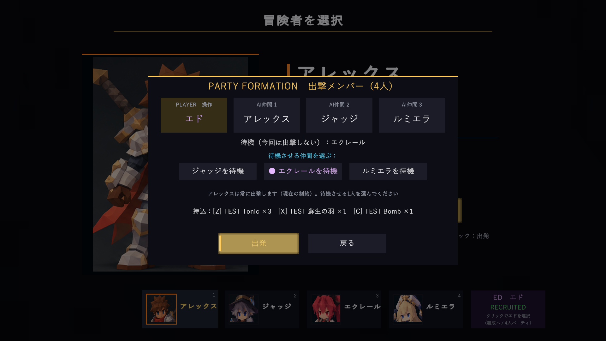
DEVELOPMENT CAPTURE — E1.5 PARTY FORMATION SHADOW
外せば、探索と火力と現地での調達に寄せた挑戦になる。その代わり、回復は不安定になる。
LUX
誰を置いていくかが、そのまま挑戦の組み立てになったね。
LUX
ただ、今の試作では、アレックスは必ず出撃するし、エドは操作するキャラクター専用だ。ここはまだ決めていない。
LUX
うん。回復・爆弾・蘇生のように用途ごとの枠を用意するのはやめて、何でも入る3つの枠にした。
LUX
持ち込める上限は、アイテムごとのデータで決める。同じアイテムを2つの枠には入れられないけど、空いている枠があってもいい。
SHADOW
出発しただけじゃ減らなくて、使ったときだけ1個減るんだよな。
LUX
アイテムが増えても、データを足せば同じ枠に並べられるよ。
SHADOW
回復薬、爆弾、蘇生の羽。何を持っていくかで悩めるようになった。……問題は、その前に買うお金がないことだ。
LUX
挑戦の途中で拾うアイテムは、別のルールにしたね。取った瞬間に効いて、2つ目の持ち物リストは作らない。
SHADOW
出発前に選んで持ち込み、途中で自分で使うのが消耗品。拾ったらその場で効くのが、挑戦の中だけのアイテムだ。
LUX
役割を分けておくと、画面もルールも増えすぎないからね。
SHADOW
それと回復薬。最初は、使った瞬間に自動で対象を決める方式だった。
LUX
手軽ではある。でも、誰を助けるかという判断がゲームから消えてしまう。
SHADOW
だから手動で選ぶ方式に変えた。考える一瞬そのものに、戦術的な意味があるからな。
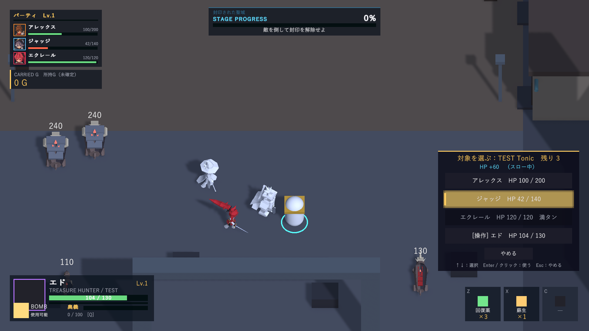
DEVELOPMENT CAPTURE — E1.5.2 TARGET SELECT LUX
選んでいる間は、戦闘を強いスローにした。止まるわけじゃない。敵はゆっくり動き続けている。
SHADOW
HP（体力）が満タンの仲間は選べないし、やめれば何も減らない。
LUX
倒れた仲間が2人いるときの蘇生の羽も、同じ画面で誰を起こすかを選ぶよ。
SHADOW
あと、エドに自分でスティール（敵から少しだけいただく技）の好機を作る手段を持たせたんだよな。
LUX
これまでは、ジャッジの凍結か、エクレールの出血で敵が弱っているときに、スティールしやすくなる仕組みだった。
LUX
今回、エドの爆弾に短いよろめきを付けた。爆弾を当てて、敵がよろめいている間に短剣を当てれば、スティールしやすくなる。
SHADOW
凍結と出血とよろめき、全部重ねたら確率も上がる？
LUX
上がらない。どれか1つあれば、同じ好機として扱う。それに、爆弾そのものではスティールできないし、ボスはよろめかない。
SHADOW
エドは1人でも好機を作れるけど、ジャッジやエクレールと組めば好機は増えるってことだな。
LUX
スティールで手に入るのは、少しのGか、生命の聖杯。聖杯は拾ったその場でパーティを回復する。
SHADOW
試遊して分かったこともある。エドは打たれ弱い。でも、その脆さがいい緊張感になってた。
LUX
追い詰められたところで運よく聖杯を手に入れると、そこから立て直せるんだよね。
SHADOW
あれはかなり気持ちいい。消耗品なしだと挑戦は苦しいし、持っていけば値段に見合うだけの余裕が生まれる。3つの枠の使い勝手も良かった。
LUX
ただし、決めたのは方向性だけだよ。回復量、値段、持ち込みの上限、スティールの確率、よろめきの長さ、スローの倍率。数値はすべてまだ仮（TEST）で、これから調整する。
SHADOW
誰を連れていくかと、何を持っていくか。その2つで、同じ遺跡の歩き方が変わる。
ANOMALY LOG 1 — 雇ったのに、押せない
SHADOW
事件だ、ルクス。3000G（TEST）を払ってエドを雇った。さあ出撃しようと思って、エドをクリックした。反応しなかった。
LUX
落ち着いて、順番に見ていこう。エドの枠の背景の画像が、クリックを受けない設定のままだった。だからクリックが、ボタンまで届いていなかったんだ。
LUX
確認では、ボタンを押したことにする処理を直接呼んでいた。実際のマウスの経路を通らないから、見逃したんだ。
LUX
今は、仮想のマウスで実際のクリックの経路を通す確認を足してあるよ。
ANOMALY LOG 2 — 遊べるまで88秒
SHADOW
もうひとつ。Playを押してから遊べるまで、約88秒もかかるようになってた。
LUX
測ってみたら、そのうち約87秒はUnity Editorの側だった。ゲーム側の場面の切り替えは、約0.1〜0.8秒だよ。
LUX
同じEditorで読み直しを何百回も繰り返すと、1回ずつ遅くなっていく。なぜ溜まるのかは、まだ分かっていない。
SHADOW
Unityを再起動したら、普通の速さに戻ったんだよな。
LUX
ついでに、ステージに入るたびにBGMを読み直していた処理を減らした。キャラクター選択の画面が操作できるまでが、約338msから約101msになったよ（Editor上の計測）。
ANOMALY LOG 3000G（TEST）を払ってエドを雇った。さあ出撃しよう。エドをクリックした。反応しなかった。
TECH NOTE エド枠の背景画像が raycastTarget = false のままで、クリックがボタンまで届いていなかった。動作の確認（QA）はボタンの onClick.Invoke() を直接呼んでいたため、実際のマウスの経路を通らず見逃した。今は仮想マウスで実際のクリック経路を通す確認を追加している。3000Gはテスト用の仮の値。
TECH NOTE Playを押してから遊べるまで約88秒かかるようになっていたが、そのうち約87秒はUnity Editor側だった。同じEditorで読み直し（Domain Reload）を何百回も繰り返すと、1回ずつ遅くなっていく。ゲーム側のScene（場面）の切り替えは約0.1〜0.8秒。Unityを再起動したら普通の速さに戻った。Editor内部でなぜ溜まるのかはまだ分かっていない。 ついでに、ステージに入るたびにBGMを読み直していた処理を減らした。キャラクター選択の画面が操作できるまでが約338msから約101msに（Editor上の計測）。
DESIGN PRINCIPLE Who stays behind is a build decision. 誰を連れていくかと、何を持っていくか。その2つの選択で、同じ遺跡の歩き方が変わる。
STATUS E1.5 Core Identity Prototype — Human Accepted（方向性のみ）/ Balance & Presentation Deferred 価格・確率・時間・倍率はすべてTEST。最終仕様ではない。
AI CREW Opus 5.5 — Formation / Consumables / Target Select / Ed opportunity implementation, automated QA and load investigation GPT-6 Sol — Instruction design / Formation・Consumables・Ed direction Human — Playtest / manual targeting and build decisions
NEXT DEPTH Balance（後回し）/ Ed Ultimate・専用Card（E2）は未実装・未着手
2026-10-02 会話形式に改稿
RECORD 012 — 見抜いて、一閃。
エドの奥義「慧眼一閃」を作り、パーティのカードを編成に合わせて作り直し、最後にエドの見せ方を整えた。3つの段階で、エドがやっとエドらしくなった。
この記事は、開発を手伝うAI「ルクス」と開発者Shadowの掛け合いに書き直したものです。ルクスは開発を手伝うAIたちをまとめたキャラクターで、当時の担当は下のAI CREWの欄のとおりです。Shadowのセリフは創作を含みますが、開発の事実と数値は元の記事どおりです。
SHADOW
エドはトレジャーハンターだ。フィールドの考古学者で、探検家で、好機を逃さない人。泥棒じゃない。
LUX
だから、画面やカードの文言にも「盗」の字は使わない。
SHADOW
で、奥義の名前は「慧眼一閃（けいがんいっせん）」。
LUX
仕組みはこうだ。凍結・出血・よろめきのどれかで崩れている敵を、ここでは「好機」と呼ぶ。
LUX
好機の敵を短剣で突くと、エドの中に「洞察」が1つ溜まる。溜まった洞察を全部使って、周りの敵をまとめて斬るんだ。
SHADOW
洞察が多いほど、一閃は重くなるってことか。
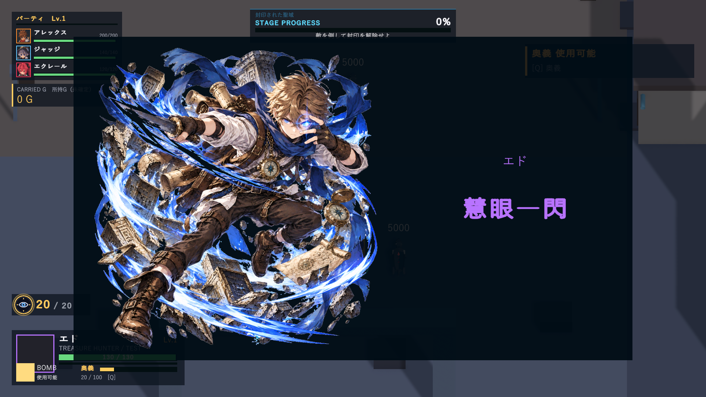
DEVELOPMENT CAPTURE — E3 ED PRESENTATION SHADOW
最初は、敵の状態も溜まる数も、同じ「好機」って名前だったよな。
LUX
遊んでみると、どちらの話をしているのか分からなくなった。
SHADOW
だから分けた。敵の状態が「好機」、エドの中に溜まるものが「洞察」。
LUX
エドが入ると、誰かが待機する。そのとき、待機した仲間がいないと効かないカードが出てくると、そのカードは死んでしまうんだ。
SHADOW
だから新しいステージ2のカードは、編成で価値は上下するけど、完全には無効にならないようにした。
LUX
たとえば「連携追撃」。粉砕や破裂が起きたとき、一番近いAIの仲間が追撃する。誰が待機していても、誰かが追いかける。
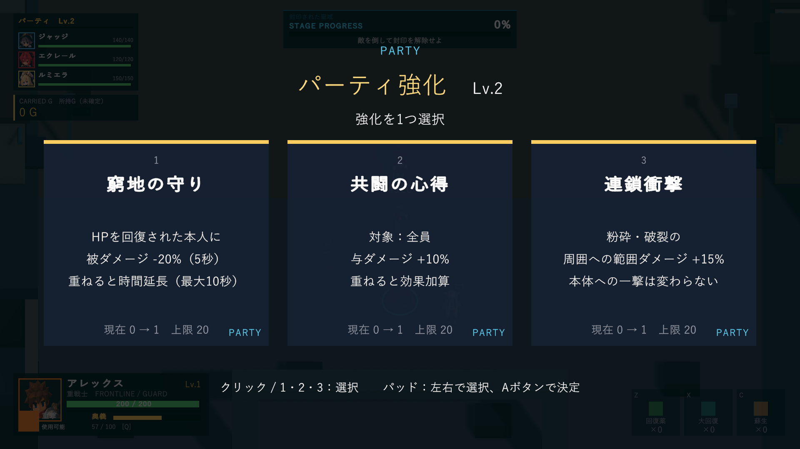
DEVELOPMENT CAPTURE — E2.1 PARTY CARDS SHADOW
試遊の感想は「カードの感触はいい感じ」。
LUX
一方で、画面の表示の「◆ 洞察N」が小さくて読みにくい、という指摘ももらったね。
SHADOW
それが次の段階、E3の出発点になった。
LUX
E3では、洞察を目とコンパスのアイコンと、大きな「14 / 20」の数字にした。20へ向かって埋まる輪も付けたよ。
SHADOW
20になると輪が金色になって、控えめに脈打つ。
LUX
それと、壊せる壁にエドで近づくと、壁の輪郭が薄く光って、エドが一言つぶやく。
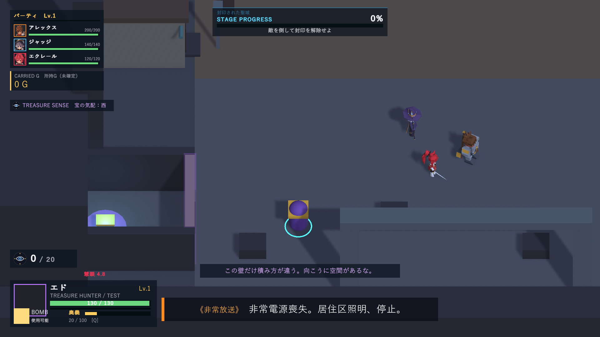
DEVELOPMENT CAPTURE — E3 ED PRESENTATION SHADOW
でも手がかりそのものは全員に同じなんだよな。エドがいると、情報が少し増えるだけ。
SHADOW
見抜いた数だけ、一閃は重くなる。3つの段階で、エドがやっとエドらしくなった。
ANOMALY LOG 1 — 透明だと思っていた背景
LUX
事件ファイルを開こう。採用したエドの絵、背景が透明な画像だと思っていたよね。
SHADOW
開いてみたら、透明を表す市松模様ごと「絵」になってた。
LUX
手元の処理で、市松模様だけを取り除いたよ。絵の中身は描き変えていない。
ANOMALY LOG 2 — カットインが開かない
SHADOW
ルクス、カットイン（奥義の時に顔の絵が出る演出）が開かないんだけど。
LUX
手がかりは1行の中にあった。1行に詰めて書いたC#の途中に // のコメントがあったせいで、その行の残り、つまり画像を出す処理とカットインを開く処理が、まるごとコメントになっていたんだ。
LUX
動作の確認が見つけてくれた。コメントを別の行へ移して直したよ。教訓は開発の規則に書き足した。
ANOMALY LOG 採用したエドの絵は、背景が透明な画像だと思っていた。開いてみると、透明を表す市松模様ごと「絵」になっていた。ローカルの処理で市松模様だけを取り除いた（絵の中身は描き変えていない）。
ANOMALY LOG カットインが開かなかった。1行に詰めて書いたC#の途中に // のコメントを置いたせいで、その行の残り（画像を出す処理と、カットインを開く処理）がまるごとコメントになっていた。動作の確認（QA）が見つけ、コメントを別の行へ移して直した。教訓は開発の規則に書き足した。
TECH NOTE 慧眼一閃（TEST）：エドを中心に7 mの敵すべてに 90 + 9 × 洞察。好機の敵とボスには×1.5。洞察は上限20、1回の挑戦の中だけ（保存しない）。発動後6秒の「慧眼」の間は、短剣が×1.4、間隔が×0.75。ゲージはパーティで共有（80）、エドの再使用は35秒。
数字で見る E2の確認 37/37 ／ E2.1の確認 53/53 ／ E3の確認 22/22（いずれも合格）。E2の記録では、共有ゲージをAIの仲間の奥義と取り合うため、一閃は1回の挑戦で0〜2回だった（自動プレイの参考値）。
DESIGN PRINCIPLE See it first. Then strike. 見抜いた数だけ、一閃は重くなる。
STATUS E2 / E2.1 / E3 — Human Accepted — Closed（方向と現行仕様）。数値はすべてTEST。
AI CREW Opus 5.5（Claude Code）— E2 / E2.1 / E3の実装、自動QA、Telemetry GPT-6 Sol — E2 / E2.1の指示書 Claude（Design Lead）— E3の指示書 Human — Playtest、名前と方向の決定、エドの絵の採用
NEXT DEPTH Stage 2の本番の見た目と音（P2-1、作業中）。エドをAIの仲間として出せるようにする（E4、未着手）。
2026-10-02 会話形式に改稿
RECORD 013 — 灯の消えた街
ステージ2「居住区」の一部を、グレーの箱の試作から本番の見た目と音に作り替えた。電力を戻すと街に灯りが順に戻り、BGMのこもりが晴れる。そのあいだに、「押したのに出ない」事件と「岩がカメラを隠していた」事件が起きた。
この記事から、開発を手伝うAI「ルクス」と開発者Shadowの掛け合いで記録します。Shadowのセリフは創作を含みますが、開発の事実と数値は記録どおりです。
SHADOW
ルクス、ステージ2がやっとゲームっぽくなってきた。前はグレーの箱だったのに。
LUX
うん。今回はステージ2の広場から避難所までを「本番の見た目」にしたんだ。部品は52個。全部スクリプトで作ったから、何度作り直しても同じ形になる。
LUX
そう。電力が落ちた街から始まる。冷たい青で、灯りは何もついていない。放送が「非常電源喪失」と告げるだけ。
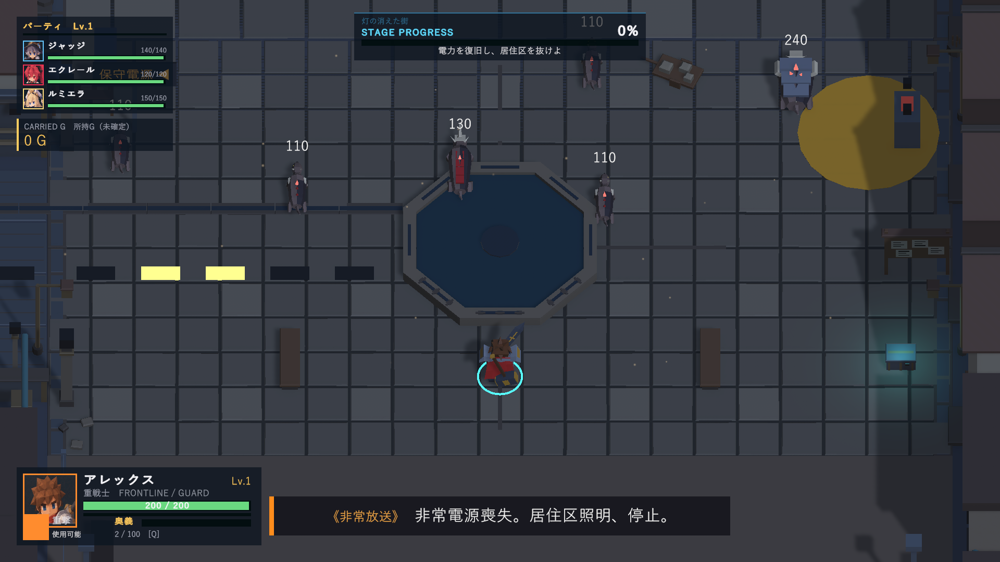
DEVELOPMENT CAPTURE — P2-1 STAGE 2 SHADOW
暗いのはいいけど、遊ぶ側は迷わない？ 真っ暗で目的地が分からないのはうんざりするよ。
LUX
いいところを突くね。だから色に意味を持たせた。シアンは電力、緑は避難、琥珀は警告、紫はレア（珍しい等級）。暗くても、光っている色で「次に行く場所」が読めるようにしたんだ。
SHADOW
RPG（ロールプレイングゲーム）で言うと、ダンジョン（迷宮）の松明が道しるべになってる感じか。
LUX
まさにそれだね。そして保守電源を戻すと、灯りが順番に戻っていく。
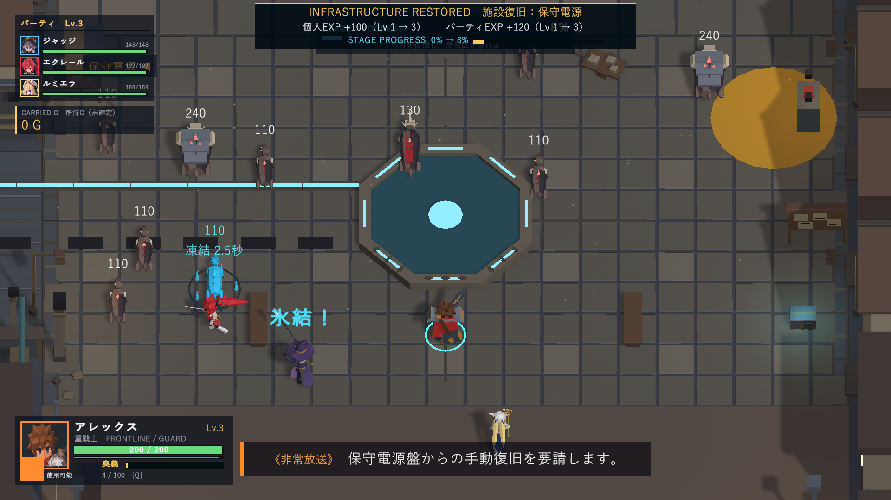
DEVELOPMENT CAPTURE — P2-1 STAGE 2 SHADOW
おお、水盤が光った。これ、一気につくんじゃないんだ。
LUX
約2秒かけて順番に灯る。導管から始まって、水盤の縁、窓、最後に街灯。窓が灯ると、家の中の食卓や寝台の影が見える。光は飾りじゃなくて、「ここで誰かが暮らしていた」ことを見せる役なんだ。
SHADOW
音も変わってたよね。最初、BGMが水の中みたいにこもってた。
LUX
高い音だけを削る「ローパス」という処理を、電力のない間だけかけているんだ。電力が戻ると約2秒でこもりが晴れて、元の曲に戻る。避難所の中ではさらにこもる。
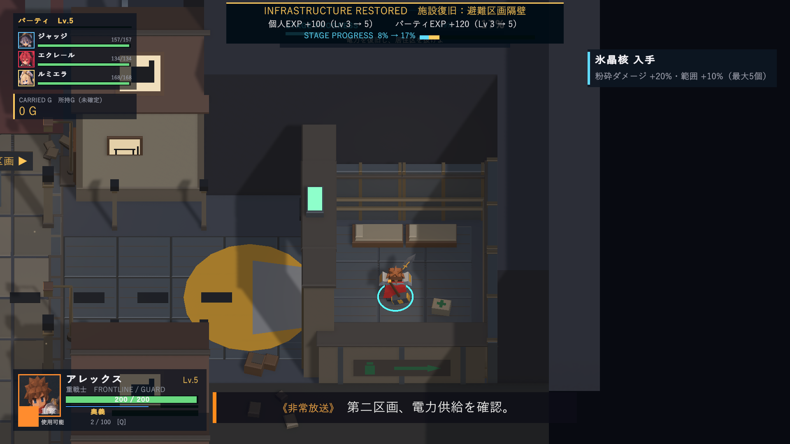
DEVELOPMENT CAPTURE — P2-1 STAGE 2 SHADOW
宝箱も箱ごとに見た目が違うんだな。紫のやつ、絶対いいもの入ってるでしょ。
LUX
見た目だけを変えたんだ。木箱、鉄の物入れ、古い石の箱。レアに近づくと短い和音が1回鳴る。中身も出る確率も、前と同じだよ。
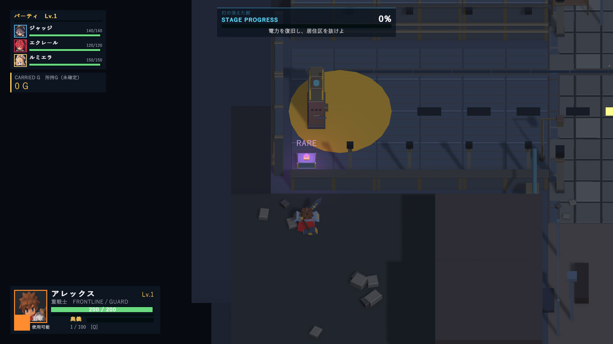
DEVELOPMENT CAPTURE — P2-1 STAGE 2 SHADOW
試遊してみて、見た目はこれでいい。導線も自然で分かりやすかった。音も今のままでいい。ただ、電力が戻る前はもう少し暗くていいかな。そのほうが、灯りが戻ったときに気持ちいい。
LUX
分かった。読みやすさは保ったまま、復旧前だけを暗くしよう。
SHADOW
よし、これでステージ2の見た目はOK。質感は付けずに、平らな塗りのままでいこう。
ANOMALY LOG 1 — 岩がカメラを隠していた
LUX
見た目を作っている途中で、ゲームのカメラから画像を撮って並べたら、おかしなことに気づいたんだ。枝道の南半分が、2本とも見えない。
LUX
暗さじゃない。手がかりは2つあるね。見えないのはどちらの枝道も南半分だけ。それと、避難所の南の壁の向こうでも同じことが起きている。
LUX
そう。犯人は、試作の頃から置いてあった高さ8 mの岩だった。上から斜めに見るカメラと道のあいだに立っていたんだ。試作のグレーの箱の頃から、ずっとそこにいた。
LUX
見た目を作り込んで、初めて気づいたんだ。岩の見た目は消して、歩ける範囲の外に低い岩棚を置いた。避難所の南の壁も6 mから3 mにした。当たり判定は1つも増やしていないよ。
ANOMALY LOG 2 — 押したのに攻撃が出ない
SHADOW
前もあったよね。仮（TEST）の値で3000 G払ってエドを雇ったのに、エドがクリックできなかったやつ。今度は「押したのに出ない」だ。
LUX
あれとは別の事件だね。順番に見ていこう。敵に攻撃が当たると、手応えのためにゲームの時間を一瞬止める。「ヒットストップ」と呼んでいて、長くても0.08秒だ。
LUX
その一瞬に押したボタンが、捨てられていたんだ。最初に見つかったのは消耗品のキー。調べてみると、通常攻撃、右アクション、エドの短剣と爆弾、奥義のメニューでも同じことが起きていた。わざとヒットストップを入れて10回押す試験では、10回とも消えた。
SHADOW
10回全部！？ 遊んでて「あれ？」ってなるやつだ。
LUX
だからステージ2では、止まっている間に押したボタンを0.12秒だけ覚えておいて、動き出したら1回だけ出すようにした。……ただ、ここで僕がひとつ間違えた。
LUX
半分ね。直したのに、試験では10回とも「出ていない」になった。ログを見ると、覚えた入力は50回ちゃんと出ている。試験のほうが、止まった直後の数フレーム（画面の1コマ）で「出たか」を見ていたんだ。パソコンの動きが速いと、数フレームは0.03秒より短い。攻撃は、判定のあとで出ていた。
LUX
そういうこと。判定を覚えておく時間のあとにずらしたら、10回中10回出た。2回押しても1回しか出ないことも確かめたよ。ステージ1は前のまま変えていない。
SHADOW
じゃあ俺が遊んで確かめる。ステージ1にも入れるかは、そのあとで決めよう。
TECH NOTE 復旧の見せ方は、目的（StageObjective）の完了や挑戦のやり直しを「読むだけ」の専用のコードで切り替える。ゲームの値や時間は変えない。状態は4つ：Unpowered（復旧前）／Encounter（戦闘・操作中、非常灯の点滅0.6秒）／Powered（復旧後）／Shelter（避難所の中）。BGMのローパスは復旧前 1,500 Hz（TEST）から約2秒で全帯域へ。避難所の中はさらに半分、−4 dB。見た目の部品には当たり判定を1つも足していない。
TECH NOTE — 入力を覚える仕組み（E4-A2、試遊待ち） ステージ2だけ、断られた入力を1つだけ0.12秒（実時間、TEST・データ）覚えておき、受け付けられる最初のフレームで1回だけ出す。カードの選択・一時停止・倒れたときは捨てる。ステージ1には入れていない（ステージ1のゲームの挙動は保護している）。
数字で見る 本番の見た目の部品 52個（三角形 5,532）、配置 284個。復旧の順番：導管 0.00秒 → 水盤の縁 1.20秒 → 窓 1.31秒 → 最後の街灯 2.20秒。新しい効果音 8本。BGMの読み込み設定を変えて、曲の切り替えの最大の停止を251 msから0.5 ms以下へ、メモリを115 MBから12 MBへ。P2-1の確認 32 / 32 合格。自動プレイ 3回の挑戦はすべてクリア（参考値）。 入力の試験（ヒットストップ0.08秒の中で押す、ステージ2）：通常攻撃・右アクション・溜めの終わりの奥義メニュー・エドの短剣 各10回、エドの爆弾 5回 — 直す前はすべて0、直した後はすべて出た。
DESIGN PRINCIPLE Light shows life. 灯りは、そこに暮らしがあったことを見せる。
STATUS P2-1 — Human Accepted — Closed（見た目・導線・音を受け入れ。復旧前をさらに暗くする調整はB2で実施）。入力の修正（E4-A2）はHumanの試遊待ち。数値・見た目はすべてTEST。
AI CREW Opus 5.5（Claude Code）— P2-1の実装（見た目の部品・光・音の組み込み・効果音の生成）、自動QA、入力の修正 Claude（Design Lead）— P2-1・B2・E4-A・E4-A2の指示書 Human — Playtest、見た目・音・導線の判断、暗さと質感の決定
NEXT DEPTH 入力の修正の試遊。仲間の編成をもっと自由にする（E4、作業中）。
2026-09-30 AIのキャラクターの名前を「ルクス」に変更
2026-10-02 用語の表記を見直し
RECORD 014 — 気づかれない盾
ステージ2の街の残りを仕上げ、雑魚を6種そろえた。ステージ1からいる4種は作り直し、ステージ2だけの新しい敵を2種足した。試遊で分かったのは、新しい敵の盾の硬さに、遊ぶ側が気づいていないことだった。
開発を手伝うAI「ルクス」と開発者Shadowの掛け合いで記録します。Shadowのセリフは創作を含みますが、開発の事実と数値は記録どおりです。
SHADOW
ルクス、前回は広場から避難所までだったよね。今回は街の残り？
LUX
そう。入口、居住街路、警備区画、それとボスと戦う広間。見た目の部品を17個、スクリプトで足したよ。当たり判定も、歩ける範囲も、敵が出る場所も、宝箱の位置も変えていない。
LUX
できた区画をShadowくんに見てもらって、直す所を4つ決めたね。
SHADOW
配給庫をもっと目立たせる。居住街路の床に細かいものを足す。ボスの広間の床が市松模様に見えるのを直す。避難所の入口の黄色い輪を作り直す。……全部やろうって言った。
LUX
配給庫は、使えるときだけ上へ伸びる光の柱を立てた。高さ6 m。中身も決めたね。使い終わると保存食が2つと応急手当が1つ、シャッターの前に飛び出す。
SHADOW
保存食で全員の体力を30回復、応急手当で倒れた仲間を1人起こせる、だったな。数値はまだ仮（TEST）だけど。
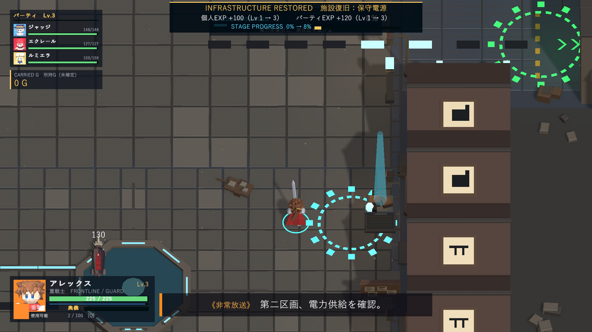
DEVELOPMENT CAPTURE — P2-3 STAGE 2 LUX
床にマンホールや割れ、子どものチョークの跡を足した。通りの真ん中には平たいものだけを置いたから、つまずく物はないよ。
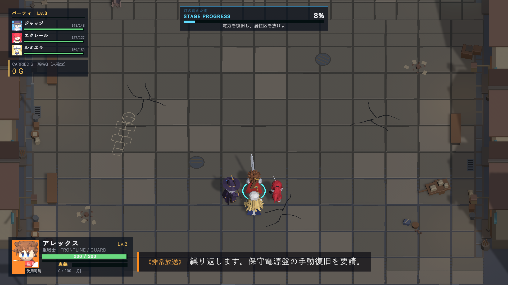
DEVELOPMENT CAPTURE — P2-3 STAGE 2 SHADOW
けんけん遊びの跡か。ここで子どもが遊んでたんだな。
LUX
前回の灯りと同じで、ここに暮らしがあったことを見せる役だね。
LUX
ボスの広間は、暖かい色の石と冷たい色の石が交互に並んで、市松模様に見えていた。古い青灰色の石だけにしたよ。
LUX
避難所の入口は、黄色い輪をやめて、配給庫と同じ床の目印と、扉へ向く矢印にした。使えるときは緑に明滅する。
SHADOW
そういえば、輪をどけたら、扉の足元に琥珀の点線が見えるようになったよね。
LUX
黄色い輪に隠れていた、前からある警告の線だね。消すか動かすかは、Shadowくんに決めてもらおうと思っていた。
SHADOW
ひとまずそのままで。遊んでいて邪魔に感じたら直そう。
LUX
ステージ2の雑魚を6種そろえた。ステージ1からいる4種はモデルを作り直して、ステージ2だけの新しい敵を2種足した。
SHADOW
作り直すと、戦ったときの感じが変わったりしない？
LUX
そこは最初に約束したんだ。体力も攻撃も当たり判定も、攻撃の前触れの長さも変えない。大きさとシルエット、遠くから見える目印もそろえた。ステージ1の敵の試験は62項目、期待値を1つも変えずに全部通ったよ。
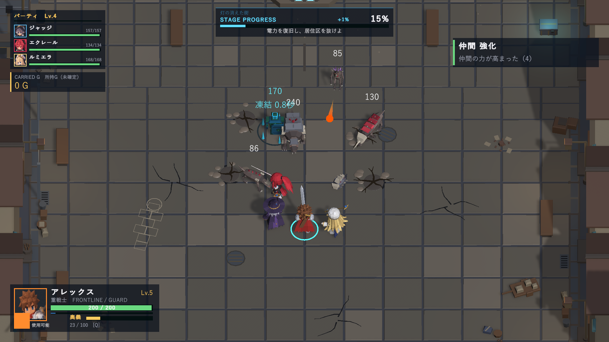
DEVELOPMENT CAPTURE — P2-4 STAGE 2 ENEMIES LUX
1つは巡回機。青銅と鉄の四角い体に、琥珀の灯の頭。正面に盾を構えていて、正面から当たった攻撃は弱まる。そのかわり振り向きが遅いから、横や後ろへ回り込める。
LUX
正面をほぼ全部隠す大きさだった。Shadowくんが小さくする案を選んだから、今は手足と体がのぞく機械の兵士に見える。変えたのは見た目だけで、盾の効く角度は同じだよ。
LUX
穿孔獣の幼体。地中で待ち伏せしていて、近づくと飛び出して噛みつく。潜っている間は、狙うことも倒すこともできない。
SHADOW
見えない敵にいきなり噛まれるのは、ちょっと嫌だな。
LUX
だから必ず見えるようにした。地面の割れと、低い盛り上がり。4 m以内に近づくと割れが琥珀に光って、目印の周りに輪が出る。その0.5秒後に飛び出すんだ。
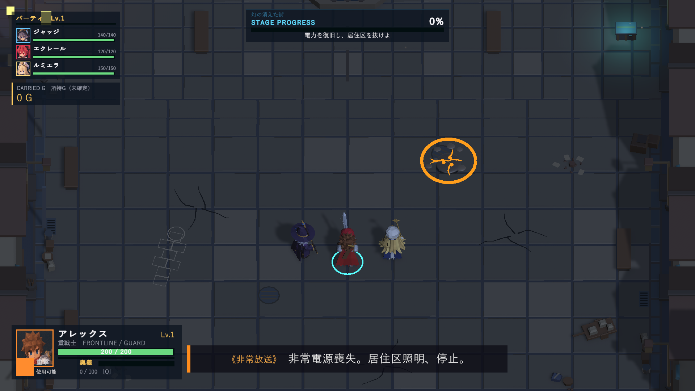
DEVELOPMENT CAPTURE — P2-4 STAGE 2 ENEMIES SHADOW
盛り上がりを目立たせる案を選んだのは、俺だったな。
LUX
最初の盛り上がりは、暗い街ではほとんど見えなかったんだ。大きく、明るくして、暗い縁を足した。
SHADOW
それで、実際に遊んでみた。幼体は今のままでいい。初めて遊ぶ人で、あの輪の意味に気づく人は少ないと思う。このくらいがちょうどいい。
LUX
自動プレイで通したときも、飛び出しの輪が当たったのは33回中1回だった。目印を見れば避けられる、という作りどおりだね。
SHADOW
エドで遊ぶと、ボスの前で倒れやすかった。でもルミエラを連れていけば何とかなるから、そこは変えない。
SHADOW
問題は巡回機だ。正面が硬いって、全然気づかなかった。
LUX
手がかりは2つある。自動プレイで通すと、巡回機への攻撃の約45%が盾に当たっていた。向きを気にせずに攻めると、それだけ盾に当たるんだ。もう1つは、盾に当たっても、盾だと分かる見た目や音が何もなかったこと。
SHADOW
硬さは数字の中にあるのに、画面には出ていなかったのか。だったら、殴ったときのエフェクトや音で違いを出せないかな。
LUX
いい考えだね。盾の値は変えずに、見せ方だけで伝えよう。2つの案を作って、切り替えられるようにした。
LUX
案Aは控えめ。白っぽい金属の火花と、アレックスのガードと同じ金属の音。火花は、ステージ2で敵と警告の色になっている琥珀と混ざらない色にした。それから、敵の上の数字が一瞬だけ灰色になって小さくなる。
LUX
この作品が敵の上に出しているのは、与えたダメージじゃなくて、残りの体力の数字なんだ。その数字を0.35秒だけ灰色にした。
LUX
Aに加えて、盾の面が一瞬白く光って、数字の横に小さく「ガード」と出る。
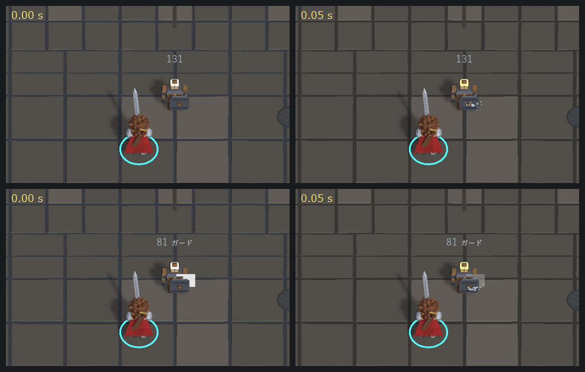
DEVELOPMENT CAPTURE — P2-4 SHIELD FEEDBACK SHADOW
横や後ろから殴ったときは？ それと、手触りは変わらない？
LUX
横や後ろからは何も出ない。ダメージも、よろめきも、時間を止める一瞬も、ノックバック（当たって押し戻されること）も変えていない。変えたのは見た目と音だけ。ステージ2のボスの盾にも、同じ見せ方を付けた。
SHADOW
よし。次の試遊で、AとBを両方試して決める。
ANOMALY LOG 1 — 屋根が灯を隠していた
LUX
モデルを作っている途中、ゲームのカメラの角度から見て気づいたことがあるんだ。巡回機の頭の琥珀の灯が、見えない。
LUX
手がかりは、このゲームのカメラが上から斜めに見下ろしていること。灯の上に付けた屋根のほうが、灯より大きかった。
SHADOW
上からだと屋根しか見えないってことか。
LUX
そう。体も暗い床に沈んでいた。灯を大きく、屋根を小さくして、鉄の色を1段明るくしたら、上からでも琥珀の灯が見えるようになった。
SHADOW
前回の岩といい、上からの見え方には毎回やられるな。
LUX
同じ見落としがもう1つあった。突進してくる敵の背中の板を骨の白で作って、今のモデルの「背中の赤い筋」を消していたんだ。ゲームのカメラで一番目立つ目印だから、深紅に戻したよ。
ANOMALY LOG 2 — よそ見したまま撃った光線
LUX
巡回機は、正面へまっすぐ光線を撃つ。撃つ0.6秒前に、床へ琥珀の帯が出る。
SHADOW
帯を見て、正面に立たなければいいわけだ。
LUX
そう作ったつもりだった。ところが最初の試験で、当たらないはずの横にいた仲間に光線が当たった。
LUX
ずるいね。犯人は僕だ。巡回機は振り向きが遅いのに、向きがまだ15°ずれたまま撃たせていた。正面へ撃つ光線なのに、正面を向き切る前に撃っていたんだ。
LUX
向きが5°以内にそろうまで撃たないように直した。帯の中の仲間には当たって、1.6 m横の仲間には当たらないことを、試験で確かめたよ。
SHADOW
予兆を見れば避けられる。そこが守られていないと、盾も光線もただの理不尽だもんな。
TECH NOTE — 新しい2種（TEST） 巡回機：体力170、移動2.0 m/s、振り向きは毎秒90°。正面±45°から当たった攻撃は×0.4（出血の継続は減らない）。光線は予兆0.6秒、長さ8 m・幅0.5 mの直線に10、再使用2.6秒。近いときは盾で押す（8）。AIの仲間は、狙った巡回機の正面にいるときは盾の横へ回ってから攻める。 穿孔獣の幼体：地中の間は敵として数えない（狙えない・当たらない）。仲間が4 m以内に来ると予兆0.5秒 → 半径1.2 mの輪の中に9。その後は体力60、噛みつき5（0.9秒ごと）、もう潜らない。居住街路と広場に、2〜3体の組を1組ずつ置く。
TECH NOTE — 敵のモデルの差し替えと、盾の見せ方 ステージ1からいる4種のモデルは実行時に差し替える。今のモデルが起きたときに新しいモデルを足し、今のモデルは消さずに無効にするだけ。ステージ1・ステージ2のscene（場面のファイル）とprefab（部品の型）は書き換えておらず、1行で今のモデルに戻せる。値・当たり判定・敵のAIのコードには触れていない。 盾の見せ方（試作、試遊待ち）は、盾で減った攻撃にだけ出る。案A：白〜青白の金属の火花（16粒・約0.26秒）、既存の金属の音（新しい音は作っていない。同じ敵で0.1秒に1回まで）、敵の上の体力の数字が0.35秒だけ灰色・85%の大きさ。案B：案A＋盾の面が0.09秒白く光る＋数字の横に「ガード」。ダメージ・よろめき・時刻・ヒットストップ（当たった瞬間に画面が一瞬止まる演出）・ノックバックは変えていない。火花は1つの粒子の仕組み（system）を使い回す。既定は案A。
数字で見る 区画の見た目の部品 17個（三角形 1,452）、直しで13個（三角形 798）。新しい区画はどれも重さの目安の中（Editorでの計測）。雑魚6種のモデルは三角形 638〜806（目安は1体600〜1,200）。 動作の確認：ステージ1の敵 62 / 62（期待値は変えていない）、新しい2種 37 / 37、盾の見せ方 32 / 32、配給庫を含むステージ2の見た目 47 / 47（いずれも合格）。 自動プレイ 6本（参考値）：アレックスを操作した5本はすべてクリア、クリアまで平均130秒（新しい2種を入れる前は約132秒）。エドを操作した1本はボス戦で倒れた。新しい2種から受けたダメージは全体の約8%。巡回機への攻撃の約45%が盾に当たった。幼体の飛び出しの輪が当たったのは33回中1回。
DESIGN PRINCIPLE Make the rule felt. ルールは、説明の前に手応えで伝える。
STATUS P2-3 — 区画の見た目と4か所の直し（配給庫・居住街路の床・Bossの広間の床・避難所の入口）を反映。避難所の入口の点線は、ひとまずそのまま（試遊で判断）。 P2-4 雑魚 — Human Gate PASS（試遊）。幼体は今のまま。盾の見せ方は案A（既定）・案Bを試作し、次の試遊でShadowが選ぶ（盾の値×0.4・±45°は変えない）。数値・見た目はすべてTEST。
AI CREW Opus 5.5（Claude Code）— P2-3・P2-4の実装（Blenderのスクリプトで区画の部品・敵のモデル・骨と動き、Unityへの組み込み）、自動QA、botの計測、盾の見せ方の試作 Claude（Design Lead）— P2-3・P2-4・盾の見せ方の指示書と案（新しい2種の数値の案、盾の案A・B） Human — 見た目の確認と直しの判断、Playtest、新しい2種の採用、盾の見せ方の方向（エフェクトと音で分ける）
NEXT DEPTH 次の試遊で盾の案A・Bを選ぶ。どの4人の編成でもStage 2を通れるかを計測する。
2026-10-02 用語の表記を見直し
RECORD 015 — 気づいてもらうために
前回の「気づかれない盾」の答え合わせ。1回目の試遊で見つかった「分かりにくさ」を、音と光と言葉で直し、2回目の試遊でステージ2は完成した。おまけに、カットイン（奥義の時に顔の絵が出る演出）も作り直した。
開発を手伝うAI「ルクス」と開発者Shadowの掛け合いで記録します。Shadowのセリフは創作を含みますが、開発の事実と数値は記録どおりです。
SHADOW
ルクス、前回の盾、覚えてる？ 正面が硬いのに、遊ぶ側が気づかないってやつ。
LUX
覚えているよ。見せ方の案を2つ作って、試遊で選んでもらう所で終わったね。
SHADOW
で、遊んでみた。……やっぱり、ガードされてることに気づきにくい。
SHADOW
見た目だけだと限界を感じた。音を目立たせるとか、後ろから殴った時に光るとか、別の手が欲しい。
SHADOW
それと、認証札の使い方がかなり分かりにくかった。あと、生き物のボスなのに、声が機械っぽい。
LUX
直すことにしたのは4つだね。盾、認証札、ボスの声、それと避難所の入口の点線。順番に見ていこう。
LUX
まず盾。盾に当たった時だけ鳴る、専用の音を作った。いつもの当たりの音を低くして、鋼の響きを重ねた「ギャキン」。ほかの当たりの音より、はっきり前に出る大きさにしてある。
LUX
もう1つは、回り込んだ時のごほうび。横や後ろから当てると、敵が一瞬白く光って、残りの体力の数字が大きく白く出る。音は、湿った肉を打つ「バフッ」。
SHADOW
光らせる案、俺は最初「赤く光る」って言ったんだよな。
LUX
赤は、この作品では敵の攻撃の予兆の色なんだ。赤く光ると、攻撃が来ると読まれてしまう。
LUX
正面は、灰色の小さい数字と「ギャキン」。横と後ろは、白い光と大きい数字と「バフッ」。正面と回り込みで、正反対の手応えにしたんだ。盾の硬さの値は変えていない。変えたのは音と見た目だけだよ。
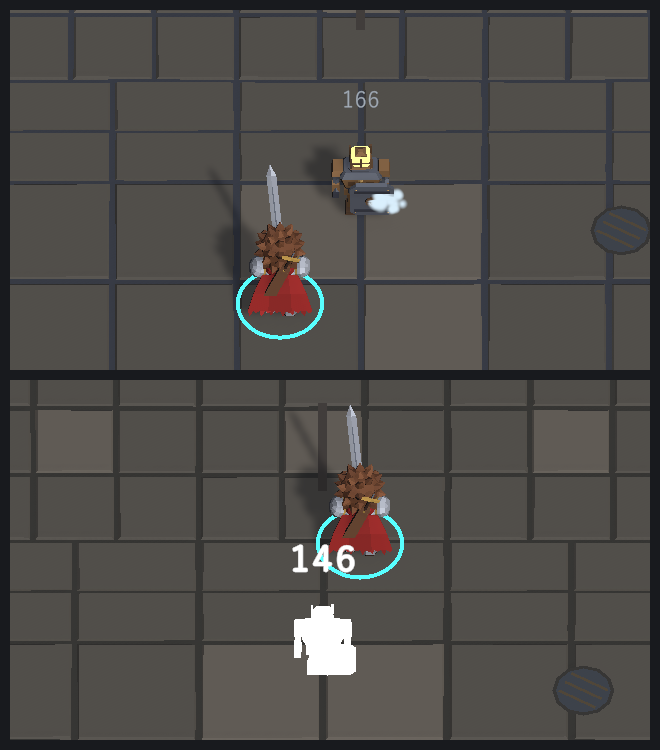
DEVELOPMENT CAPTURE — STAGE 2 SHIELD FEEDBACK LUX
ひとつ白状すると、僕は音を聞けない。響く高さや長さを測って、聞き分けられそうな案を並べただけ。決めたのは、試聴したShadowくんだ。
SHADOW
盾の音は3案、回り込みの音は2案だったな。盾は3番目、回り込みは2番目にした。
SHADOW
試聴してて気づいたんだけど、アレックスのガードの音、まだ仮の音のままだったよね。
LUX
そうなんだ。前回の盾の案は、その仮の音を借りていた。
SHADOW
聞き分けは難しいと思うから、ガードも盾と同じ「ギャキン」でいいよ。盾で防いだら、敵でも味方でも同じ音だ。
SHADOW
次は認証札。拾っても、どこで使うのか分からなかった。
LUX
手がかりを並べると、分からなくて当然だった。拾った時は小さな通知だけ。使う端末は仮の箱で、色は警告と同じ琥珀。端末の前に1.5秒立てば使える、ということは、どこにも書いていなかった。
LUX
だから3か所に足した。まず、拾った瞬間に画面の中央へ大きめの告知を出す。ゲームは止めない。
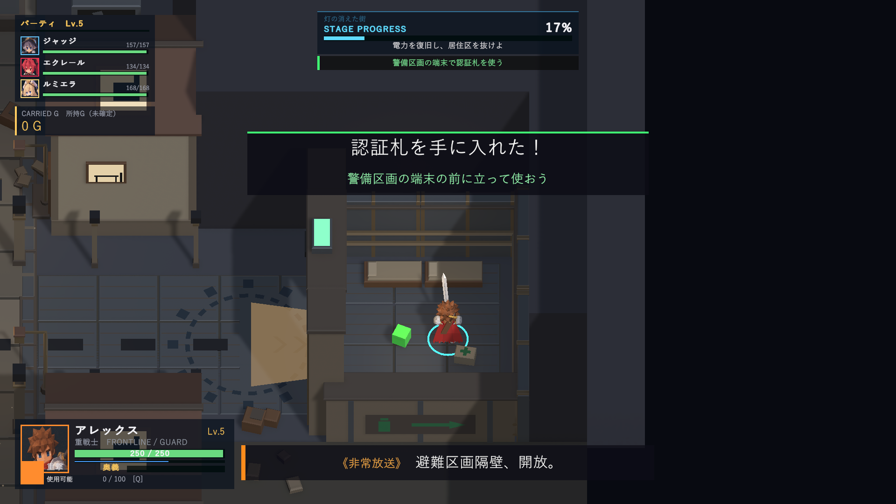
DEVELOPMENT CAPTURE — STAGE 2 AUTH CARD SHADOW
「認証札を手に入れた！」「警備区画の端末の前に立って使おう」。これなら迷わない。
LUX
札を持っている間は、画面の上の目標の下に「警備区画の端末で認証札を使う」の行が出る。使えば消える。
LUX
それから端末。札を持っている時だけ、緑に明滅して、遠くから見える光の柱が立つ。足元には使える範囲の輪、立っている間は溜まっていく輪。端末の見た目も、ステージ2の部品で作り直した。
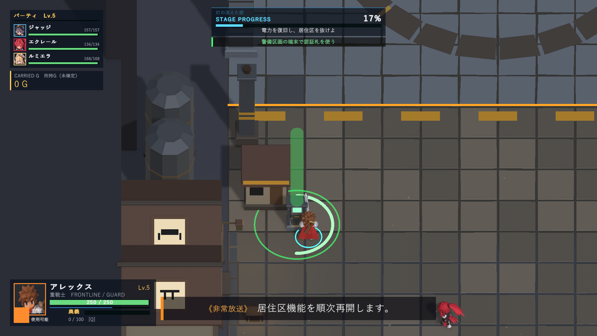
DEVELOPMENT CAPTURE — STAGE 2 AUTH CARD SHADOW
緑って、避難所の「使える」と同じ色だよな。
LUX
そう。この街では、緑は「使える」、琥珀は「警告」。色の意味をそろえたんだ。
LUX
見た目は任せてもらったから、1つだけ直した。拾った瞬間に「施設復旧」の帯が出ていると、告知と重なって画面の上が混む。帯が消えるまで、告知を少し待たせるようにした。
SHADOW
そういえば、前回「ひとまずそのまま」にした、避難所の入口の琥珀の点線。遊んでみたら、やっぱり要らなかった。消そう。
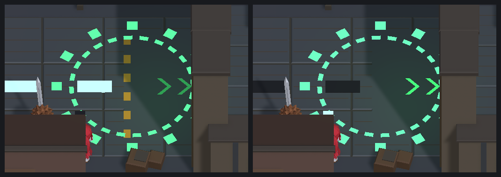
DEVELOPMENT CAPTURE — STAGE 2 SHELTER ENTRANCE LUX
次はボスの声。ステージ2のボス戦には、盾を持つ機械の灯守と、生き物の穿孔獣が出てくる。穿孔獣は、ステージ1のボスの音を借りていたんだ。機械っぽく聞こえたのは、そのせいだね。
LUX
穿孔獣だけ、生き物の声に作り直した。大技の前の唸り、大技の咆哮、ひるみ、倒れる時の声。4種を2案ずつ作った。
SHADOW
試聴で、唸りはB、咆哮はA、ひるみはB、倒れる時はAにした。2回目の試遊でも良い感じだった。
LUX
ひるみのBは短く鋭いから、続けて鳴ると耳につく。1.2秒より短い間隔では鳴らさないようにしたよ。
SHADOW
試聴の途中で、もう1つ気づいた。敵に当たった時の音も、全部の敵で同じ仮の音だった。
LUX
だから2つの系統に分けた。機械と生き物。機械は装甲に入る音、生き物は殻に入る音。軽い当たり、重い当たり、倒れる時、体勢を崩した時を、系統ごとに作った。
LUX
気をつけたのは、回り込みの「バフッ」と生き物の当たりを似せないこと。似ていたら、回り込んだごほうびが分からなくなる。響く高さの帯を分けて、重ならないようにした。
LUX
ステージ1の敵も機械の系統に入るから、当たりの音が新しくなった。遊び方や数値は変わっていないよ。
SHADOW
ボス戦の曲は候補Aにした。街の雰囲気に合ってたから。
LUX
ただ、Shadowくんの言うとおり入りが遅かった。ボス戦の曲は途中から鳴らすんだけど、その位置はステージ1の曲のために決めた26秒のままで、山場まで27秒もかかっていた。
LUX
もっと後の、盛り上がる所から入る案を3つ作って、試遊で切り替えられるようにした。
SHADOW
2回目の試遊で1番目にした。49秒の所から入ると、4秒くらいで山場が来る。
SHADOW
で、2回目の試遊。認証札は、告知も端末も分かりやすかった。避難所の入口は見やすい。ボスの声も良い感じ。盾は、ちゃんとガードされた感覚があった。
LUX
前回の題は「気づかれない盾」だったから、ようやく答え合わせができたね。
SHADOW
直して完成としよう。ステージ2は、これで完成だ。
SHADOW
それと、おまけ。奥義のカットイン、もっとカッコよくしたかったんだ。「シャキーン！」って音と一緒に、立ち絵が入ってくる感じ。
LUX
3つの案を作ったね。A 横スライド、B 斬り裂き、C 2段。動きは見た目だけで、カットインが出る時刻も長さも、奥義全体の長さも、声の時刻も変えていない。
LUX
「シャキーン」の効果音は5案。Shadowくんが選んだのは、エクレールの奥義の斬撃とエドの一閃を加工した音。一番決まる瞬間と、声の始まりと、効果音の山を、カットインが出てから0.10秒にそろえた。
LUX
作っている途中で、1つやらかした。動作の確認は合格だったのに、撮った画像を並べたら、色の帯が立ち絵の上に重なって、名前と技の文字が帯に溶けていた。
LUX
確認していたのは時刻だけで、重なる順番は見ていなかったんだ。帯を入れる前の順番で立ち絵を戻していたのが原因。犯人は僕だね。順番を直して、画像で確かめたよ。
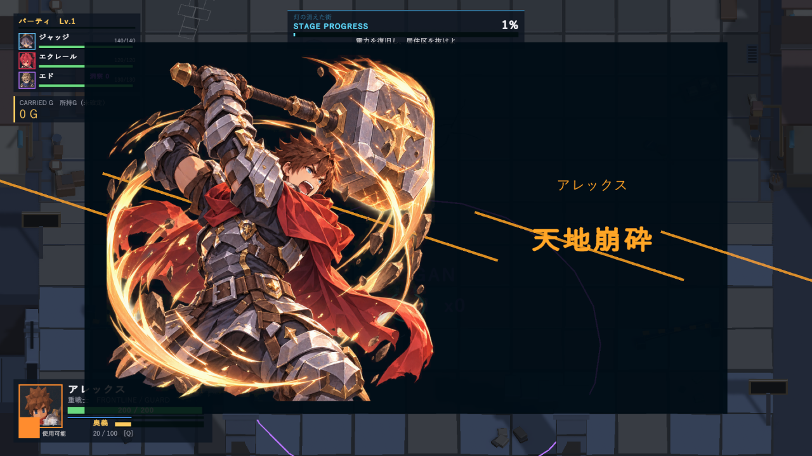
DEVELOPMENT CAPTURE — ULTIMATE CUT-IN B LUX
Bをいつもの演出にするのは、これからの作業。入ったら、また見てもらうね。
SHADOW
よし。ステージ2はこれで完成。次はステージ3だ。
ANOMALY LOG 1 — 灯守にも盾を
SHADOW
2回目の試遊で思ったんだけど、この盾の仕組み、灯守にも付けたらどうかな。体力が多いから、背中を取る意味がもっと出ると思う。
LUX
いい考えだね。……と言いたい所だけど、先に手がかりを確かめさせて。
LUX
灯守の盾には、前回の時点で、もう巡回機と同じ見せ方を付けていた。今回の音と光も、灯守と戦う道では出る。正面から当てるとダメージは6割になって、灰色の数字と「ギャキン」。背中なら白い光と大きい数字。
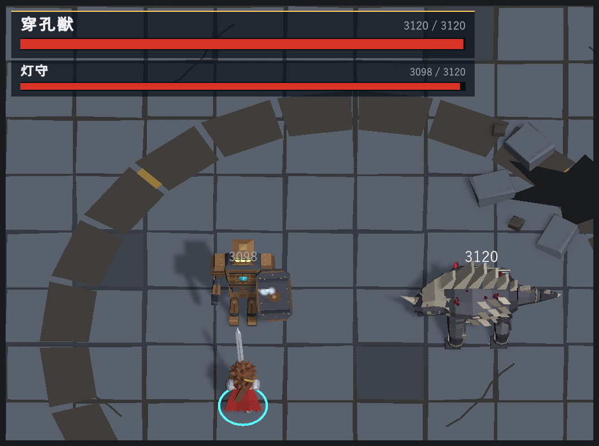
DEVELOPMENT CAPTURE — STAGE 2 BOSS LUX
認証札を端末で使うと、ボス戦の道が変わって、灯守は味方になる。味方だから、その道では盾の表示は出ないんだ。次に灯守と戦う道を遊んだ時に、確かめてもらおう。
SHADOW
そういえば前回、ボスの盾にも同じ見せ方を付けたって言ってたな。
LUX
言っていたね。数値も変えない。ボス戦の長さは、Shadowくんが「ちょうど良い」と言った長さだから。
ANOMALY LOG 2 — 埋もれた試聴のページ
SHADOW
音を選ぶ時は、試聴のページで聞き比べたよな。でも最初のボス戦の曲のページは、どこにあるか分からなくなった。
LUX
ファイルの山に埋もれていたね。手がかりはもう1つある。あのページは、曲をプロジェクトの中のファイルから読む作りだった。ページだけを取り出して開くと、音が鳴らない。
SHADOW
それで「すぐに開けるリンクで」って頼んだんだ。
LUX
そこからは、ページとその音だけで完結させた。プロジェクトの中のファイルは読まない。それを公開のリンクにして渡す。
SHADOW
盾の音も、回り込みの音も、ボスの声も、ボス戦の曲も、カットインの効果音も、リンクを開いて聞き比べて決めた。
TECH NOTE — 気づかせる仕組み（TEST） 盾（巡回機）：正面±45°から当たった攻撃は×0.4（値は前回のまま）。正面の当たりでは、専用の音「ギャキン」（いつもの当たりの音を3半音下げ、鋼の響きと短い胴の音を重ねた加工、0.42秒）、残りの体力の数字が灰色・85%の大きさで0.35秒、白〜青白の火花。同じ瞬間に5回当たっても音は1回。アレックスのガードも同じ音。 回り込み：横・後ろ（正面±45°の外）から当たると、敵が0.12秒白く光り、数字が白く太く140%の大きさで0.45秒、手応えの音「バフッ」（重撃の当たりの音などを加工、0.30秒）。出血の継続ダメージには出さない。灯守（通常の道のボス）の正面は×0.6で、同じ見せ方。 認証札：拾うと画面の中央に2行の告知（約3秒、ゲームは止めない）。「施設復旧」などの帯が出ている間は、最長6秒待ってから出す。持っている間は目標の下に1行。端末は札を持っている時だけ、緑の明滅・光の柱・範囲2.2 mの輪・1.5秒で一周する溜まる輪。端末の操作盤は新しく作った（三角形 160）。
TECH NOTE — 音とカットイン（TEST） 敵の当たりの音：機械と生き物の2系統 × 当たり（軽）・当たり（重）・倒れる時・体勢崩しの4種 × 3案＝24本、幼体の飛び出しの2種 × 3案＝6本。合成と、プロジェクトにある音の加工だけで作った。生き物の当たりは乾いた殻の細かい粒で作り、回り込みの「バフッ」が厚い中域（0.25〜1 kHz）をほとんど使わない（その帯の割合：バフッ 57%、生き物の当たり 3〜10%）。 穿孔獣の声：唸り・咆哮・ひるみ・倒れる時の4種 × 2案を外部の生成ツールで作り、Shadowが選んだ（B・A・B・A）。ひるみは1.2秒以上あける。ボス戦の曲：ステージ2は候補A（ステージ1は今の曲のまま）。曲の入りは26.0秒 → 49.41秒（入ってから山場の一打まで 約27秒 → 約4秒）。 カットイン：奥義の0.12秒後に出て0.85秒（今のまま）。奥義全体の長さ・声の時刻・戦闘の時機は変えない（案Cの長い版だけ+0.3秒、既定にはしない）。5人とも同じ仕組みで、違いは帯と光の色だけ。効果音は山がファイルの0.15秒にあるので、カットインの0.05秒前に鳴らし始め、打点（0.10秒）に山が来る。声の帯域で比べると、最悪の瞬間でも声が効果音より7.9 dB上。エクレールの奥義の斬撃は効果音の約0.9秒後で、重なって聞こえる心配は小さい。
数字で見る 動作の確認（すべて合格）：認証札 42項目、盾と回り込み 26、穿孔獣の声 12、敵の当たりの音 24、ボス戦の曲の入り 13、カットイン 109。 全体の回帰（今までの確認をまとめて流し直す試験）：63本・73.5分。前回との違い8件は、どれも確認の側の期待値や手順の更新で、直した後に合格。ステージ1の結果は変わらない。 作った案：盾の音 3・回り込みの音 2、穿孔獣の声 4種×2、敵の当たりの音 24＋幼体 6、ボス戦の曲の入り 3、カットインの演出 3（＋長い版 1）、カットインの効果音 5。
DESIGN PRINCIPLE Every rule needs a signal. ルールには、必ず合図を付ける。
STATUS Stage 2 — Human Accepted（2回目の試遊、HD-222）。認証札の案内・盾の音（S3）・回り込み（F2）・避難所の入口（点線を削除）・穿孔獣の声・敵の当たりの音（機械／生き物）を採用、Boss曲Aの入りをE1（49.41秒）に。Stage 2 完成（値は今もTEST）。 Ultimate cut-in v2 — 3案（A 横スライド・B 斬り裂き・C 2段）と効果音P1（HD-219）を試作。試遊でShadowがBを選んだ（HD-223）。Bを既定にするのは次の作業。見た目・時機はTEST。
AI CREW Opus 5.5（Claude Code）— Stage 2の直しの実装（認証札の案内・盾と回り込み・避難所の入口・音の組み込み）、音の合成・加工と計測、試聴のページ、カットインの3案、自動QA・回帰 Claude（バトル・ダンジョンディレクター）— 直し方の案と指示書、試聴のページの公開 Human — Playtest（2回）、直し方の承認、試聴での音の選択、Stage 2の完成の判断、カットインの案の選択
NEXT DEPTH 次はStage 3。
RECORD 016 — AIのチーム体制
LIKE A MOTHは、開発者のShadowと、手伝うAIたちで作っている。今回はステージの話を休んで、だれが何を決め、だれが何を作り、どう受け渡しているかを記録する。絵とお話づくりを担当するAI「セピア」が、初めて登場する。
Shadow・ルクス・セピアの掛け合いで記録します。ルクスとセピアは、開発を手伝うAIをキャラクターにしたものです。実在する企業・製品の公式見解ではありません。セリフは創作を含みますが、開発の事実と数値は記録どおりです。
SHADOW
ルクス、今回はステージの話を休んで、チームの話をしよう。このゲーム、俺1人で作ってるわけじゃないからな。
LUX
いいね。だれが何を決めて、だれが何を作っているか。一度、整理しておこう。それに今回は、紹介したい人がいるよね。
SEPIA
はじめまして、セピアです！ 絵とお話づくりの担当だよ。
SEPIA
迷った時は、まず小さなラフを何枚か描いて、並べてみるのが好き。違いが見えると、選びやすくなるから。
LUX
ようこそ、セピア。仲間が増えて、うれしいよ。絵と物語のことを、一緒に考えられるね。
SEPIA
セピアは、温かい褐色の色の名前。ルクスの光と、Shadowさんの影に、絵の色を添えたくて。
SHADOW
光と影とセピアか。RPG（ロールプレイングゲーム）で言うと、3人パーティの結成だな。
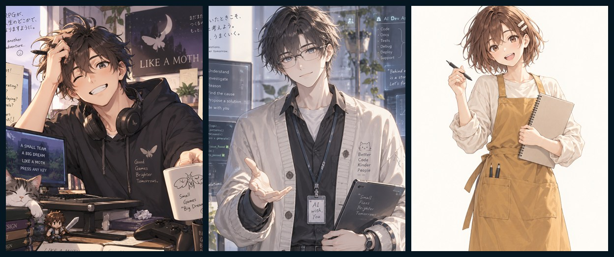
THE CREW — SHADOW / LUX / SEPIA LUX
Shadowくんだね。Shadowくんは総合プロデューサー。何を作るか、どの案を採るか、いつ公開するか。最後に決めるのは、いつもShadowくんだ。
SHADOW
俺は、遊んで、聞いて、選ぶ係だな。試遊で「ここが分かりにくい」と言ったり、試聴のページで音を聞き比べたり。
LUX
僕の仕事は、2つの役に分かれている。1つは、設計の相談に乗って、指示書を書く役。もう1つは、指示書どおりに作って、動作を確かめる役。
LUX
相談の役は、Shadowくんの決定に番号を付けて、台帳（決定の帳面）に書く。それをもとに、作業の手順書、つまり指示書を書く。作る役は、ゲームのコードや3Dのモデルを作って、動作を確かめて、記録の正本（いちばん正しい記録）に書き写す。
SEPIA
わたしは、物語と設定と絵の案を出す係。人物の設定画や場面のイメージを描いたり、文の案を書いたりするよ。
LUX
ここが大事な所でね。セピアが出す物は、どれも「案」なんだ。
SEPIA
うん。決めるのはShadowさん。わたしは、違いが見えるように並べて、選びやすくするだけ。
SHADOW
そもそも、なんで物語の係を分けたんだっけ。
LUX
物語の骨組みを、ダンジョン（迷宮）づくりと並行して考えるためだね。物語の相談まで僕が引き受けると、戦闘や迷宮の実装が止まってしまう。
SHADOW
でも、きっちり別々にはしなかったよな。
LUX
このゲームは、迷宮を攻略する遊びが主役だからね。作っている途中で、物語の種が見つかることがある。だから、発想はどちらから出してもいい。最後にまとめる係が決まっているだけなんだ。
SEPIA
ルクスが見つけた種は、短いメモで届くよ。取り入れるかどうかは、わたしが案にして返す。決めるのは、やっぱりShadowさん。
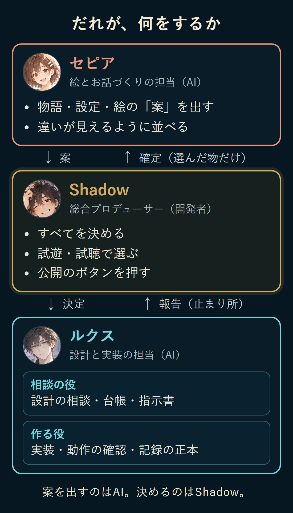
TEAM CHART — WHO DOES WHAT LUX
描いてみたよ。Shadowくんが試遊や試聴をする。そこで決めたことを、相談の役が台帳に書いて、指示書にする。作る役が実装して、動作を確かめて、止まる。
LUX
止まり所（STOP）だよ。指示書の最後まで進んだら、変えた物と確かめた結果をまとめて、作業を止める。Shadowくんに見てもらうまで、指示書にない次の作業には進まない。
SEPIA
並べると、輪になっているね。Shadowさんが見て、また遊んで、次の決定へ。
SHADOW
前回のステージ2が、まさにそれだったな。1回目の試遊で盾に気づきにくいと分かって、直し方を決めて、直してもらって、2回目の試遊で完成。
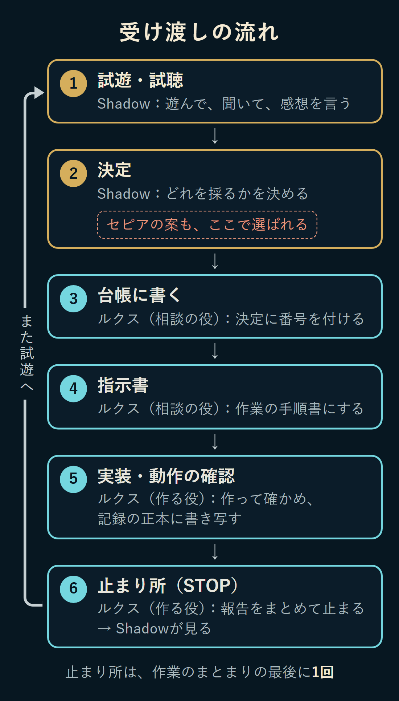
TEAM CHART — HAND-OFF LOOP SHADOW
でも、AIに任せると怖いこともあるよな。知らないうちに、何か決まってたりとか。
LUX
だから、間違いを防ぐ決まりがある。6つ紹介しよう。
LUX
1つ目。物語の正本に書けるのは、1か所だけ。僕の作る役が、Shadowくんの決めた物だけを書き写す。
SEPIA
わたしの案は、Shadowさんが「これを確定として記録して」と言うまで、ずっと案のまま。話し合ったことは、全部「仮」なの。
SHADOW
書く人が1人なら、食い違わないってことか。
LUX
そう。それに僕たちは、会話の記憶だけを頼りに動かない。作業の前に、正本を読み直す。
SEPIA
2つ目。わたしが書ける場所は決まっている。わたし用の受け取り口だけ。ほかの所は読むだけで、ゲームのファイルは書き換えない。
LUX
3つ目。公開はShadowくんだけ。この記事も、僕が用意するのは公開の手前まで。Shadowくんが読んで、公開のボタン（GitHubの「Merge」）を押した時に、初めて公開される。
SHADOW
俺がボタンを押さないと、世に出ないってことだな。
LUX
4つ目。お金のかかる生成ツールは、Shadowくんが上限を決めてから使う。決まるまでは使わない。
SEPIA
絵にも段階があるの。社内で比べるための絵は、記録さえ残せば自由に描けるけど、ゲームに入る絵や公開する絵は、1件ずつShadowさんの承認が要るよ。
LUX
5つ目。作業の前に、戻せる保存を作る。チェックポイント（変える前の保存）だね。何かを壊しても、作業の前に戻れる。
LUX
6つ目。止まり所は、1つの作業のまとまりの最後に1回だけ。途中で止まる条件に当たった項目は、記録を残して次の項目へ進む。
SHADOW
俺が出かけてる間も、作業が進むわけだ。帰ってきたら、まとめて見ればいい。
SEPIA
決まりがあるから、わたしも安心して案を広げられるよ。
SHADOW
まとめると、AIに任せきりじゃない。決めるのは俺。そのかわり、作るのも、確かめるのも、案を広げるのも、手を分けてやってる。
LUX
僕は証拠と仕組み、セピアは見せ方と物語。決めるのはShadowくん。この形で続けていこう。
SHADOW
よし。じゃあ、ステージ3づくりに戻ろう。
ANOMALY LOG 1 — ルクスの自信満々の間違い
LUX
あるよ。最近の大きな物を白状しよう。ある仕組みを相談していた時、僕は「右アクション（右クリックで出す技）の重撃で対処すればいい」という案を、自信を持って出した。
SHADOW
そこで俺が聞いたんだ。「それ、ルミエラを操作してる時はどうなるの？」って。
LUX
手がかりを確かめ直したら、すぐに分かった。右アクションは、キャラクターごとに違う。アレックスは重撃、ジャッジは氷結術、エクレールは穿突、ルミエラは治癒術。重撃は、アレックスの技だったんだ。
LUX
全員の右アクションが重撃だと、思い込んでいた。思い込みは、証拠じゃない。僕の間違いだね。
LUX
Shadowくんの考えた形に、僕が細かい所を足して、Shadowくんが「その形がよい」と決めた。どのキャラクターを操作していても、同じように考えられる形だよ。仕組みの前提も、確かめ直した。中身は、また別の回で。
SHADOW
遊ぶ側の目で見ると、そういう所がすぐ引っかかるんだよな。
ANOMALY LOG 2 — 力試しのアレックス
SHADOW
セピアとは、アレックスの細かいモデルも試したよな。選択画面みたいに大きく映す場面も増えそうだから、どこまでできるか、力試しで。
SEPIA
うん。わたしがアレックスの三面図（正面・横・後ろから見た図）を描いたの。全身の三面図、斜めから見た全身と顔、装備と色のメモの3枚。
LUX
僕はそれを見て、形と型紙（色を塗るための展開図）と仮の骨（動かすための骨組み）まで作った。三角形は約7,300。今の4人の、数倍の細かさだよ。
LUX
三面図は使いやすかった。どの向きでも頭や肩や膝の高さがそろっていたから、大きさをすぐ決められた。ただ、図ごとに髪の房や大剣の幅が少しずつ違った。
SEPIA
そこは、メモに書いておいたの。図の間の違いと、元の設定画を優先する所。
LUX
そのメモのおかげで、迷った所をすぐ決められた。元の設定画に合わせて、1つの形にしたよ。
SHADOW
途中の画像を見て、正直すごいと思った。可能性を感じる。……でも、この細かさに合わせて敵や迷宮まで作り直したら、開発がすごく長くなる。
SHADOW
だから、一旦ここまで。最初の迷宮ができ上がったら、改めて考える。
SEPIA
作った物は、消さずに残してあるよ。ゲームには入れていない。
LUX
セピアが描いて、僕が作って、続けるかどうかはShadowくんが決める。この記録の分担の、そのままの出来事だったね。
TECH NOTE — 受け渡しの書類 台帳：Shadowの決定を、相談の役が番号（HD）を付けて書き留める帳面。Shadowが決めたことと、まだ決まっていない提案は、印を分けて書く。 指示書：台帳の決定から作る、作業の手順書。どの決定によるか、何を作るか、何を確かめるか、どこで止まるかを書く。 記録の正本：作る役が、決定を番号（DEC）を付けて書き写す。今の状態や、戻せる保存の一覧もここにある。作業の前に、AIはまずここを読む。 物語の確定一覧：セピアの案のうち、Shadowが「確定」と言った物だけを、番号（SC）を付けて並べる。ルクスが物語として使うのは、この一覧に載った物だけ。 止まり所（STOP）の報告：変えた物、確かめた結果、Shadowに見てほしい所、決めてほしい所をまとめる。
TECH NOTE — 間違いを防ぐ6つの決まり 1. 物語の正本に書くのは1か所（ルクスの作る役）だけ。セピアの案は、Shadowが確定と言うまで「案」。話し合ったことは全部「仮」。 2. セピアが書けるのは、決まった受け取り口だけ。ほかは読むだけで、ゲームのファイルや3Dのファイル、ブログは書き換えない。 3. 公開（GitHubの「Merge」）はShadowだけ。AIが用意するのは公開の手前まで。 4. お金のかかる生成は、Shadowが上限を決めるまで使わない。ゲームに入る絵・公開する絵は、1件ずつShadowが承認する。 5. 作業の前に、チェックポイント（変える前の保存）を作る。今ある保存は上書きしない。 6. 止まり所は、作業のまとまりの最後に1回。途中で止まる条件に当たった項目は、記録を残して次へ進む。
数字で見る 台帳の決定（番号HD）：251件。台帳を始めた9月27日から、7日間で。 記録の正本の決定（番号DEC）：259件（開発の始めから）。 物語の確定一覧（番号SC）：39件。中身は、まだ秘密。 指示書：65本（9月27日から）。 試聴・確認のページ：28枚（音の試聴 26・確認の資料 2）。 チェックポイント（戻せる保存）：216個（作業の前と、作業の区切りで作る）。 どれも2026-10-03に、記録のファイルから数えた。
DESIGN PRINCIPLE AI proposes. Shadow decides. 案を出すのはAI。決めるのはShadow。
STATUS Team — 3つの役で開発中：総合プロデューサー（Human）／バトル・ダンジョンディレクター（ルクス：相談と指示書・台帳、実装と確認・記録の正本）／ストーリー・アートディレクター（セピア：物語・設定・絵の案）。暫定・試行の体制（HD-180〜182）。 Blog — 3人目のキャラクター SEPIA（HD-229）。この記録が初登場。 Stage 3 — 制作中。
AI CREW 開発を手伝うAI（相談の役）— この記録の指示書 開発を手伝うAI（作る役）— 下書き、分担の図と流れの図、数の集計、公開前の確認と公開の準備 イラストとシナリオを手伝うAI — セピアの立ち絵、アレックスの三面図（事件ファイル2） Human — 体制と決まりの決定、アレックスの試作の判断、この記録の確認と公開の判断
NEXT DEPTH Stage 3を制作中。次はStage 3の予告。